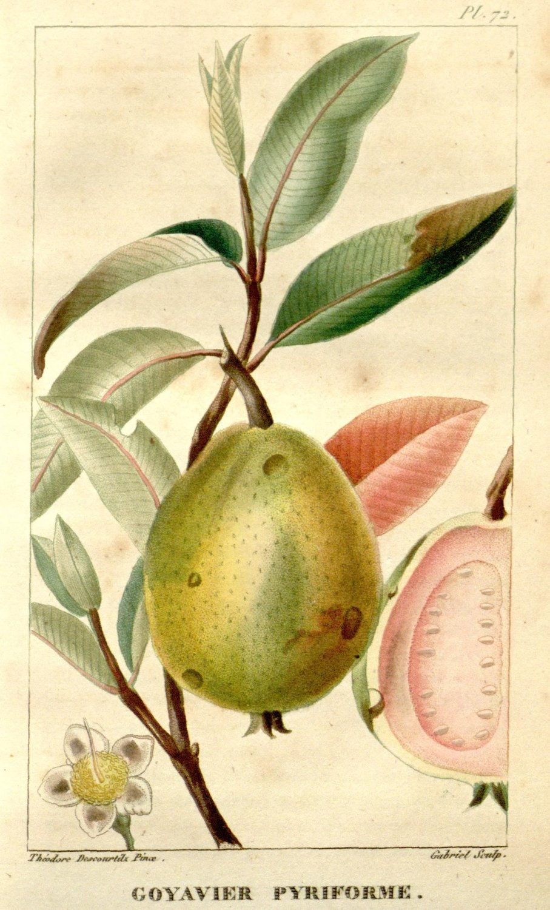
A complete husbandry, from root to ripened fruit — gathered from the world's best science and set, plate by plate, before the grower.دليل زراعة كامل، من الجذر إلى الثمرة الناضجة — مجموع من أفضل علوم العالم، ومرتّب لوحةً بلوحة بين يدي المزارع.
❧
Each chapter teaches the reason behind the practice. Begin anywhere.كل فصل يعلّمك السبب وراء الممارسة. ابدأ من أي مكان.
The map, the philosophy, and how to move through it.الخريطة والفلسفة وكيفية التحرّك خلالها.
Open →افتح ←Soil, plants, nutrients & water — from absolute zero.التربة والنبات والعناصر والماء — من الصفر تمامًا.
Open →افتح ←Delta clay, salinity, drip conversion & smart scheduling.طين الدلتا والملوحة والتحوّل للتنقيط والجدولة الذكية.
Open →افتح ←Varieties, propagation, pruning & the winter-crop skill.الأصناف والإكثار والتقليم ومهارة المحصول الشتوي.
Open →افتح ←Feed the tree by test, not habit. Run fertigation.غذِّ الشجرة بالتحليل لا بالعادة. وشغّل الرسمدة.
Open →افتح ←Beat the fruit fly; manage wilt, nematodes & scales.اهزم ذبابة الفاكهة؛ وأدِر الذبول والنيماتودا والقشري.
Open →افتح ←Free satellite NDVI, sensors, apps & AI — cheaply.NDVI مجاني، مستشعرات، تطبيقات وذكاء اصطناعي — بثمن زهيد.
Open →افتح ←Stop losing fruit; turn culls into paste, jam & juice.أوقف خسارة الثمار؛ وحوّل الفرز إلى عجوة ومربى وعصير.
Open →افتح ←Know your real profit; sell smarter; reach export.اعرف ربحك الحقيقي؛ بِع بذكاء؛ وصِل للتصدير.
Open →افتح ←Plug into ARC, universities, labs & farmer communities.اتّصل بمركز البحوث والجامعات والمعامل والمجتمعات.
Open →افتح ←The best books, channels, courses & certifications.أفضل الكتب والقنوات والدورات والشهادات.
Open →افتح ←Milestones, self-checks & a month-by-month calendar.مؤشّرات الإنجاز وتقييم ذاتي وتقويم شهرًا بشهر.
Open →افتح ←❧
Golden rule: begin with a soil & water test and keep a written record. Your highest skill is the winter crop; your chief adversary is the fruit fly.القاعدة الذهبية: ابدأ بتحليل تربة وماء واحتفظ بسجلّ مكتوب. أعلى مهاراتك المحصول الشتوي، وعدوّك الأول ذبابة الفاكهة.
❧
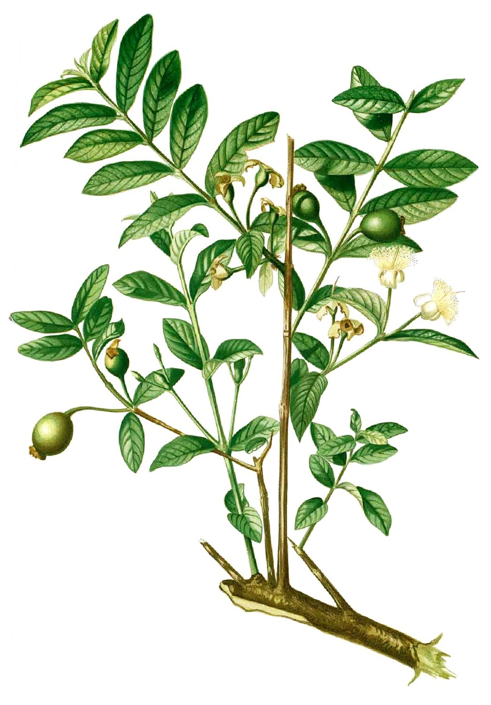
Who this is for: A white (common) guava farmer — Psidium guajava — in Kafr El Dawwar, Behira, Nile Delta, Egypt, who today farms by folk experience and trial-and-error, and wants to become one of the most competent fruit growers in the world.
The promise: This roadmap assumes zero prior formal knowledge. Every concept is introduced from scratch. You do not need to know any science to start.
Money: The best free resources are preferred everywhere; the best paid books/tools are named regardless of price, and flagged when they truly add value. The overwhelming majority of what you need is free.
Language: Resources are English-first (the best material in the world is in English), with strong Arabic alternatives added wherever a genuinely good one exists. Don't let English stop you — captions, translation, and the Arabic backups cover every step.
This is a Map of Content (MOC). Each phase below is its own deep-dive note. Follow the [[links]].
You already know how to grow guava. What you don't yet have is the scientific "why" behind each thing you do — and that "why" is exactly what separates an average grower from a world-class one. A world-class grower can look at a yellowing leaf and name the nutrient, look at the sky and the soil and decide the irrigation, look at a trap count and decide whether to spray. They turn guesswork into decisions.
Four principles run through everything here:
| # | Phase | What you'll be able to do | Note |
|---|---|---|---|
| 0 | Foundations & How to Learn | Understand soil, plants, water & nutrients from zero; set up a learning habit | Foundations & How to Learn |
| 1 | Soil, Water & Irrigation | Read your Delta clay & salinity; convert to drip; schedule water by science | Soil, Water & Irrigation |
| 2 | Guava Cultivation Science | Varieties, propagation, pruning, and the winter-crop forcing skill | Guava Cultivation Science |
| 3 | Plant Nutrition & Fertigation | Feed the tree by soil/leaf test, not habit; run fertigation | Plant Nutrition & Fertigation |
| 4 | Pest & Disease Management (IPM) | Beat the fruit fly; manage wilt, nematodes & scales the modern way | Pest & Disease Management |
| 5 | Modern & Precision Ag Tech | Use free satellite NDVI, sensors, apps & AI — cheaply | Modern & Precision Ag Tech |
| 6 | Post-Harvest & Value Addition | Stop losing fruit; turn culls into paste, jam & juice | Post-Harvest & Value Addition |
| 7 | Business, Marketing & Export | Know your real profit; sell smarter; reach export | Business, Marketing & Export |
| 8 | Egypt Local Hub | Plug into ARC, universities, labs, nurseries & farmer communities near you | Egypt Local Hub |
📚 Every book, channel, course & certification in one place: Resource Library ✅ Milestones, a self-check ladder, and a month-by-month season calendar: Progress Tracker & Season Calendar
The phases are numbered for clarity, but here's the practical order for a working farmer who can't stop farming to study:
NOW (Weeks 1–4) → Get a SOIL + WATER test (Phase 1 & 8). This single act
informs everything else. While you wait, read Phase 0.
Months 1–3 → Foundations (Phase 0): soil, plant, nutrient, water basics.
In parallel, fix POST-HARVEST handling (Phase 6) — it's nearly
free and pays back this season.
Months 3–9 → Guava cultivation deep-dive (Phase 2): master pruning +
the WINTER-CROP forcing protocol on a small trial block.
Start the IPM fruit-fly program (Phase 4) — traps + sanitation.
Months 6–18 → Convert a block to DRIP + FERTIGATION (Phase 1 & 3).
Layer in free precision tools (Phase 5): satellite NDVI on
your phone, a soil-moisture sensor, the Plantix app.
Year 2+ → Business & market (Phase 7): keep records, join/build a
cooperative, pursue GLOBALG.A.P. entry-level, aim at export.
Throughout: lean on your LOCAL HUB (Phase 8).
The golden first move: walk into the Kafr El Dawwar District Agriculture office, register, ask for the horticulture extension agent (مرشد البساتين), and get your soil + irrigation-water analyzed (Damanhour University lab or SWERI — see Egypt Local Hub). Everything in Phase 1 and Phase 3 depends on knowing your soil and water numbers.
You are "leveling up" when you can do each of these yourself, roughly in order:
When you can do all seven, you are operating at the world-class tier — in Egypt's #1 guava governorate, on your own land.
The floor — "my trees produce fruit and I sell it to a trader" — is where most growers stop. The top tier is defined by things most never combine:
That is the whole journey this roadmap lays out. Start with the soil test and Foundations & How to Learn.
لمن هذا الدليل: مزارع جوافة بيضاء (شائعة) — Psidium guajava — في كفر الدوار، البحيرة، دلتا النيل، مصر، يعتمد اليوم على الخبرة الفلاحية والتجربة والخطأ، ويريد أن يصبح من أكفأ مزارعي الفاكهة في العالم.
الوعد: هذا الدليل يفترض عدم وجود أي معرفة علمية مسبقة. كل مفهوم يُشرح من الصفر. لست بحاجة لأي خلفية علمية لتبدأ.
التكلفة: فُضِّلت المصادر المجانية الأفضل في كل مكان؛ وذُكرت أفضل الكتب والأدوات المدفوعة بصرف النظر عن سعرها، مع التنبيه حين تستحق فعلًا. الغالبية العظمى مما تحتاجه مجاني.
اللغة: المصادر بالإنجليزية أولًا (أفضل محتوى في العالم بالإنجليزية)، مع بدائل عربية قوية كلما توفّر بديل جيّد فعلًا. لا تدع الإنجليزية تعيقك — الترجمة الفورية للترجمات النصية، والبدائل العربية، تغطّي كل خطوة.
هذه خريطة محتوى (MOC). كل مرحلة بالأسفل لها ملاحظتها التفصيلية الخاصة. اتبع الروابط [[ ]].
أنت تعرف بالفعل كيف تزرع الجوافة. ما لا تملكه بعد هو «السبب» العلمي وراء كل ما تفعله — وهذا «السبب» هو بالضبط ما يفصل المزارع العادي عن المزارع عالمي المستوى. المزارع المتميّز ينظر إلى ورقة صفراء فيسمّي العنصر الناقص، وينظر إلى السماء والتربة فيقرّر الري، وينظر إلى عدد المصائد فيقرّر هل يرشّ أم لا. هو يحوّل التخمين إلى قرارات.
أربعة مبادئ تسري في كل ما يلي:
| # | المرحلة | ما ستصبح قادرًا عليه | الملاحظة |
|---|---|---|---|
| ٠ | الأساسيات وكيفية التعلّم | فهم التربة والنبات والماء والعناصر من الصفر؛ بناء عادة تعلّم | الأساسيات وكيفية التعلّم |
| ١ | التربة والمياه والري | قراءة طين الدلتا والملوحة؛ التحوّل للتنقيط؛ جدولة الري علميًا | التربة والمياه والري |
| ٢ | علم زراعة الجوافة | الأصناف والإكثار والتقليم ومهارة تحضير المحصول الشتوي | علم زراعة الجوافة |
| ٣ | تغذية النبات والتسميد بالري | تغذية الشجرة بالتحليل لا بالعادة؛ تشغيل التسميد بالري (الرسمدة) | تغذية النبات والتسميد بالري |
| ٤ | إدارة الآفات والأمراض (المكافحة المتكاملة) | هزيمة ذبابة الفاكهة؛ التعامل مع الذبول والنيماتودا والحشرات القشرية بالطرق الحديثة | إدارة الآفات والأمراض |
| ٥ | التقنيات الحديثة والزراعة الدقيقة | استخدام صور الأقمار الصناعية المجانية (NDVI) والمستشعرات والتطبيقات والذكاء الاصطناعي — بثمن زهيد | التقنيات الحديثة والزراعة الدقيقة |
| ٦ | ما بعد الحصاد والتصنيع | إيقاف خسارة الثمار؛ تحويل الفرز إلى عجوة ومربى وعصير | ما بعد الحصاد والتصنيع |
| ٧ | الأعمال والتسويق والتصدير | معرفة ربحك الحقيقي؛ البيع بذكاء؛ الوصول للتصدير | الأعمال والتسويق والتصدير |
| ٨ | المركز المحلي في مصر | الاتصال بمركز البحوث والجامعات والمعامل والمشاتل ومجتمعات المزارعين بجوارك | المركز المحلي في مصر |
📚 كل كتاب وقناة ودورة وشهادة في مكان واحد: مكتبة المصادر ✅ مؤشّرات الإنجاز، وسُلّم تقييم ذاتي، وتقويم موسمي شهرًا بشهر: متابعة التقدّم والتقويم الموسمي
المراحل مرقّمة للوضوح، لكن هذا هو الترتيب العملي لمزارع يعمل ولا يستطيع التوقّف عن الزراعة للدراسة:
الآن (الأسبوع ١–٤) ← اعمل تحليل تربة + ماء (المرحلة ١ و٨). هذا الفعل وحده
يغذّي كل ما بعده. وأثناء الانتظار اقرأ المرحلة ٠.
الشهر ١–٣ ← الأساسيات (المرحلة ٠): التربة، النبات، العناصر، الماء.
وبالتوازي، أصلِح معاملة ما بعد الحصاد (المرحلة ٦) —
فهي شبه مجانية وتعوّض هذا الموسم.
الشهر ٣–٩ ← تعمّق في زراعة الجوافة (المرحلة ٢): أتقن التقليم
وبروتوكول تحضير المحصول الشتوي على قطعة تجريبية صغيرة.
وابدأ برنامج المكافحة المتكاملة لذبابة الفاكهة (المرحلة ٤).
الشهر ٦–١٨ ← حوّل قطعة إلى تنقيط + رسمدة (المرحلة ١ و٣).
وأضِف أدوات دقيقة مجانية (المرحلة ٥): صور NDVI على هاتفك،
مستشعر رطوبة، تطبيق Plantix.
السنة ٢+ ← الأعمال والتسويق (المرحلة ٧): امسك السجلات، انضمّ/أنشئ
جمعية تعاونية، اسعَ لشهادة جلوبال جاب التمهيدية، استهدف التصدير.
وطوال الوقت: استند إلى مركزك المحلي (المرحلة ٨).
أول خطوة ذهبية: ادخل إدارة الزراعة بمركز كفر الدوار، سجّل، اطلب مرشد البساتين، واعمل تحليل تربة + ماء ري (معمل جامعة دمنهور أو معهد بحوث الأراضي والمياه — انظر المركز المحلي في مصر). كل ما في المرحلة ١ والمرحلة ٣ يعتمد على معرفة أرقام تربتك ومائك.
أنت «ترتقي» حين تستطيع أداء كل مما يلي بنفسك، بالترتيب تقريبًا:
حين تستطيع السبعة جميعًا، تكون قد بلغت المستوى العالمي — في محافظة الجوافة رقم ١ في مصر، على أرضك.
الحدّ الأدنى — «أشجاري تثمر وأبيع لتاجر» — هو حيث يتوقّف معظم المزارعين. أما القمة فتُعرَّف بأمور قلّما تجتمع:
تلك هي الرحلة كلها التي يرسمها هذا الدليل. ابدأ بتحليل التربة وبـالأساسيات وكيفية التعلّم.
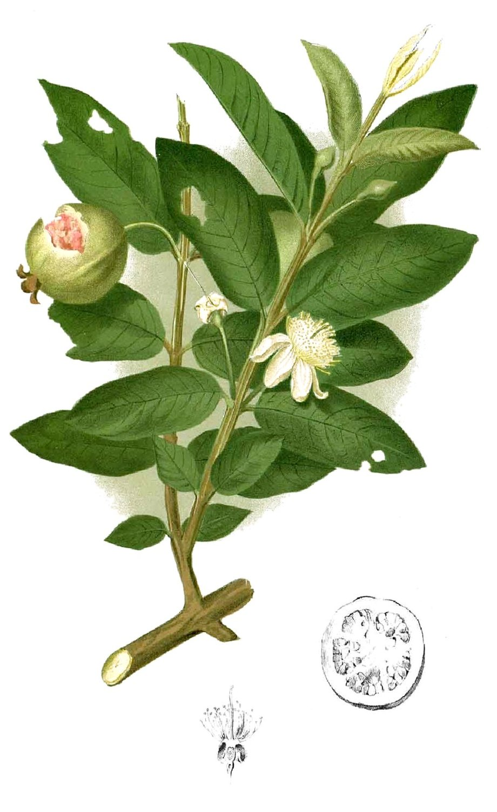
This phase builds the science under your feet and inside your trees, starting from absolutely nothing. Every other phase rests on it. Spend ~2–3 months here at a relaxed pace, while you also fix post-harvest handling (Post-Harvest & Value Addition) for quick wins.
You're a working farmer, not a student. Use the farm as your classroom:
Why first: Your guava's health, your salinity problem, your water behaviour, and your fertilizer all start in the soil. You farm heavy clay / clay-loam in the north Delta — that single fact shapes everything (see Soil, Water & Irrigation).
The core ideas to understand (from zero):
Best resources (in learning order):
| Resource | Type | Why it's the best start | Cost |
|---|---|---|---|
| Soil Science: Exploring the World Beneath our Feet (Lancaster Univ., FutureLearn) | 4-week course | The single best true-beginner soil course; includes hands-on tests on your own soil | Free to audit |
| Introduction to Soil Science (Iowa State, open textbook) | Free textbook | University-grade but readable; your standing reference | Free |
| Plant Nutrient Management in Hawaiʻi's Soils (Univ. of Hawaiʻi CTAHR) | Free PDF series | Written for tropical/subtropical soils — mirrors the Delta | Free |
| Interpreting Your Soil Test Reports (Penn State) | Guide | Teaches the real skill: acting on a lab report | Free |
🇪🇬 Arabic backup: FAO eLearning Academy (Arabic) has soil & land-management modules in Arabic with free certificates; الفلاح اليوم for Egyptian soil-analysis articles and local fertilizer terms.
Do this: After the Lancaster course's texture lesson, do a jar test on soil from 3 spots in your orchard. Write the results in your notebook. You now know your texture — the foundation of every irrigation and fertilizer decision.
Why: If you understand how a plant makes food, drinks water, and grows shoots, then pruning, nutrition, and crop regulation stop being magic and become logical. The single most important fact for guava: it fruits on new (current-season) shoots. That one idea drives all pruning and crop-timing (see Guava Cultivation Science).
Core ideas: photosynthesis (leaves turn sunlight + water + CO₂ into sugar), roots vs shoots, how water travels root → leaf → air (transpiration), how the plant senses light and seasons.
Best resources:
| Resource | Type | Why | Cost |
|---|---|---|---|
| Crash Course Botany | 15-video playlist | The best, most enjoyable beginner intro to how plants work | Free |
| Khan Academy — Plant Biology | Course | Clear, self-paced; great for re-explaining any concept that won't click | Free |
| Understanding Plants, Part II (Tel Aviv Univ., Coursera) | Course (~14h) | Real plant science at a beginner-friendly depth | Free to audit |
🇪🇬 Arabic backup: قناة المهندس الزراعي أبو العز — practical Egyptian field videos that bridge folk practice and the formal science.
Why: Yellowing leaves, poor fruit set, small fruit — most are nutrition problems you can learn to read. This is the foundation for Plant Nutrition & Fertigation.
Core ideas: plants need 17 essential nutrients. The big three (N-P-K) plus calcium, magnesium, sulfur (the "macros"), and tiny amounts of iron, zinc, manganese, boron, and others (the "micros"). Each has a job, and each has a visible deficiency symptom you can learn to recognize by sight.
Best resources:
| Resource | Type | Why | Cost |
|---|---|---|---|
| Essential Nutrients for Plant Growth (CTAHR Hawaiʻi) | Free PDF | All nutrients explained for tropical/subtropical crops | Free |
| Visual Symptoms of Plant Nutrient Deficiencies (CTAHR) | Photo guide | Diagnose yellowing/tip-burn by sight in your own trees | Free |
| 17 Essential Plant Nutrients & Their Functions (Haifa) | Reference | One-page cheat sheet (use the science, ignore the product pitch) | Free |
| Leaf Tissue Analysis (WSU Tree Fruit) | Guide | How & when to sample leaves — the pro's diagnostic tool | Free |
Do this: Print the CTAHR deficiency-symptoms guide. Next time you see a discoloured guava leaf, match it to a picture before you spray anything.
Why: Water is scarce and expensive in Egypt, and over- or under-watering both cost you. The key concept is evapotranspiration (ET) — how much water the weather + the tree lose each day, which is what you replace. Full detail lives in Soil, Water & Irrigation; here just build the intuition.
Core idea: Water demand = how thirsty the weather is (heat, sun, wind, dryness) × how big and active the crop is. Hot dry Delta summers = high demand; cool winters = low. You'll learn to calculate this rather than guess.
Best resources:
Once the four foundations above make sense, connect them to fruit trees specifically:
| Resource | Type | Why | Cost |
|---|---|---|---|
| Penn State Tree Fruit Production Guide | Free manual | A complete orchard manual — culture, nutrition, pruning, pests | Free |
| Guava Production Practices (Vikaspedia, India) | Guide | A full free "package of practices" for guava — your bridge into Guava Cultivation Science | Free |
| FAO eLearning Academy | 700+ courses | Free, globally open, free certificates, Arabic available — your credential path | Free |
🇪🇬 Arabic backup: رواق (Rwaq) and إدراك (Edraak) — the big free Arabic course platforms, with agriculture content.
→ Next: Soil, Water & Irrigation (apply this to your Delta clay and water), or jump to quick wins in Post-Harvest & Value Addition.
All resources are gathered in Resource Library.
تبني هذه المرحلة العلم الذي تحت قدميك وداخل أشجارك، انطلاقًا من لا شيء. كل مرحلة أخرى تستند إليها. اقضِ هنا نحو ٢–٣ أشهر بإيقاع مريح، بينما تُصلح أيضًا معاملة ما بعد الحصاد (ما بعد الحصاد والتصنيع) لمكاسب سريعة.
أنت مزارع يعمل، لا طالب. اجعل المزرعة فصلك الدراسي:
لماذا أولًا: صحة جوافتك، ومشكلة الملوحة، وسلوك المياه، والتسميد، كلها تبدأ في التربة. أنت تزرع في طين / طين طمي ثقيل في شمال الدلتا — وهذه الحقيقة وحدها تشكّل كل شيء (انظر التربة والمياه والري).
المفاهيم الأساسية لفهمها (من الصفر):
أفضل المصادر (بترتيب التعلّم):
| المصدر | النوع | لماذا هو أفضل بداية | التكلفة |
|---|---|---|---|
| Soil Science: Exploring the World Beneath our Feet (جامعة لانكستر، FutureLearn) | دورة ٤ أسابيع | أفضل دورة تربة مبتدئة فعلًا؛ تتضمّن اختبارات يدوية على تربتك أنت | مجانية بالاستماع |
| Introduction to Soil Science (جامعة ولاية آيوا، كتاب مفتوح) | كتاب مجاني | جامعي لكنه سهل القراءة؛ مرجعك الدائم | مجاني |
| Plant Nutrient Management in Hawaiʻi's Soils (جامعة هاواي CTAHR) | سلسلة PDF مجانية | مكتوبة للتُرَب الاستوائية/شبه الاستوائية — تشبه الدلتا | مجاني |
| Interpreting Your Soil Test Reports (جامعة بنسلفانيا) | دليل | يعلّمك المهارة الحقيقية: التصرّف بناءً على تقرير المعمل | مجاني |
🇪🇬 البديل العربي: أكاديمية الفاو للتعلّم الإلكتروني (عربي) بها وحدات عن التربة وإدارة الأراضي بالعربية وشهادات مجانية؛ والفلاح اليوم لمقالات تحليل التربة المصرية والمصطلحات السمادية المحلية.
افعل هذا: بعد درس القوام في دورة لانكستر، اعمل اختبار برطمان لتربة من ٣ مواضع في بستانك. سجّل النتائج في دفترك. الآن تعرف قوامك — أساس كل قرار ري وتسميد.
لماذا: إن فهمت كيف يصنع النبات غذاءه، ويشرب الماء، ويُنبت أفرعًا جديدة، يكفّ التقليم والتغذية وتنظيم الحمل عن كونها سحرًا ويصير منطقًا. وأهم حقيقة عن الجوافة: هي تثمر على النموّات الحديثة (نموّ الموسم الحالي). هذه الفكرة وحدها تحرّك كل التقليم وتوقيت الحمل (انظر علم زراعة الجوافة).
المفاهيم الأساسية: البناء الضوئي (الأوراق تحوّل الشمس + الماء + ثاني أكسيد الكربون إلى سكر)، الجذور مقابل المجموع الخضري، كيف ينتقل الماء من الجذر ← الورقة ← الجو (النتح)، كيف يستشعر النبات الضوء والفصول.
أفضل المصادر:
| المصدر | النوع | لماذا | التكلفة |
|---|---|---|---|
| Crash Course Botany | قائمة ١٥ فيديو | أفضل وأمتع مقدمة مبتدئة لكيفية عمل النبات | مجاني |
| Khan Academy — Plant Biology | دورة | واضحة وبإيقاعك؛ ممتازة لإعادة شرح أي مفهوم يستعصي | مجاني |
| Understanding Plants, Part II (جامعة تل أبيب، Coursera) | دورة (~١٤ ساعة) | علم نبات حقيقي بعمق مناسب للمبتدئ | مجانية بالاستماع |
🇪🇬 البديل العربي: قناة المهندس الزراعي أبو العز — فيديوهات حقلية مصرية عملية تربط الممارسة الفلاحية بالعلم النظري.
لماذا: اصفرار الأوراق، ضعف العقد، صغر الثمار — معظمها مشكلات تغذية يمكنك تعلّم قراءتها. هذا أساس تغذية النبات والتسميد بالري.
المفاهيم الأساسية: يحتاج النبات ١٧ عنصرًا غذائيًا أساسيًا. الثلاثة الكبار (نيتروجين-فوسفور-بوتاسيوم) إضافةً للكالسيوم والماغنسيوم والكبريت («العناصر الكبرى»)، وكميات ضئيلة من الحديد والزنك والمنجنيز والبورون وغيرها («العناصر الصغرى»). لكلٍّ وظيفة، ولكلٍّ عَرَض نقص مرئي يمكنك تعلّم تمييزه بالنظر.
أفضل المصادر:
| المصدر | النوع | لماذا | التكلفة |
|---|---|---|---|
| Essential Nutrients for Plant Growth (CTAHR هاواي) | PDF مجاني | كل العناصر مشروحة لمحاصيل استوائية/شبه استوائية | مجاني |
| Visual Symptoms of Plant Nutrient Deficiencies (CTAHR) | دليل مصوّر | شخّص الاصفرار/احتراق الأطراف بالنظر في أشجارك | مجاني |
| 17 Essential Plant Nutrients & Their Functions (Haifa) | مرجع | ورقة مرجعية لكل العناصر (خذ العلم، تجاهل دعاية المنتج) | مجاني |
| Leaf Tissue Analysis (WSU) | دليل | كيف ومتى تأخذ عيّنة أوراق — أداة المحترف التشخيصية | مجاني |
افعل هذا: اطبع دليل أعراض النقص من CTAHR. في المرة القادمة التي ترى فيها ورقة جوافة متغيّرة اللون، طابقها مع صورة قبل أن ترشّ أي شيء.
لماذا: الماء شحيح وغالٍ في مصر، والإفراط أو التقصير في الري كلاهما يكلّفك. المفهوم المحوري هو البخر-نتح (ET) — كمية الماء التي يفقدها الطقس + الشجرة يوميًا، وهي ما تعوّضه. التفصيل الكامل في التربة والمياه والري؛ هنا فقط ابنِ الحدس.
الفكرة الأساسية: الطلب على الماء = مدى «عطش» الطقس (حرارة، شمس، رياح، جفاف) × حجم المحصول ونشاطه. صيف الدلتا الحار الجاف = طلب مرتفع؛ والشتاء البارد = منخفض. ستتعلّم حساب هذا بدل التخمين.
أفضل المصادر:
حين تستوعب الأسس الأربعة أعلاه، اربطها بـأشجار الفاكهة تحديدًا:
| المصدر | النوع | لماذا | التكلفة |
|---|---|---|---|
| Penn State Tree Fruit Production Guide | دليل مجاني | دليل بستان كامل — الزراعة، التغذية، التقليم، الآفات | مجاني |
| Guava Production Practices (Vikaspedia، الهند) | دليل | حزمة ممارسات كاملة ومجانية للجوافة — جسرك إلى علم زراعة الجوافة | مجاني |
| أكاديمية الفاو للتعلّم الإلكتروني | ٧٠٠+ دورة | مجانية، متاحة عالميًا، شهادات مجانية، بالعربية — مسار شهادتك | مجاني |
🇪🇬 البديل العربي: رواق وإدراك — أكبر منصّتي دورات عربية مجانية، بهما محتوى زراعي.
→ التالي: التربة والمياه والري (طبّق هذا على طين الدلتا ومائك)، أو اقفز لمكاسب سريعة في ما بعد الحصاد والتصنيع.
كل المصادر مجمّعة في مكتبة المصادر.
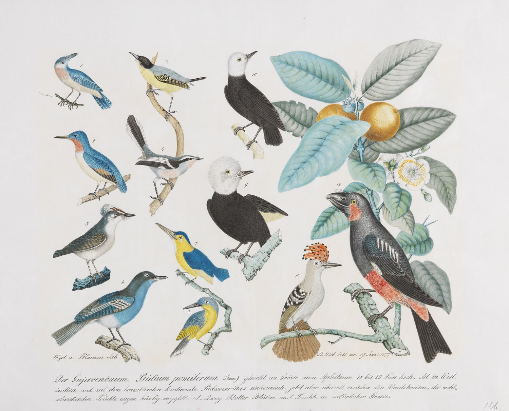
Your situation in one breath: heavy clay/clay-loam in the north Nile Delta, canal (Nile) water, real water scarcity, and a serious salinity/sodicity risk (≈46% of north-Delta land is salt-affected). Three facts drive every decision: clay holds water but lets it in slowly; salts accumulate and must be managed; and the government is actively pushing (and sometimes subsidizing) flood → drip conversion. Guava responds strongly to drip — it can start bearing a year earlier with bigger, sweeter fruit.
Everything below is guesswork until you have two lab numbers: a soil analysis and an irrigation-water analysis. Get them from Damanhour University, SWERI, or Saba Basha lab — all in Egypt Local Hub.
Ask the lab specifically for:
Then ask them to interpret, not just hand you numbers. The interpretation framework is FAO's Water Quality for Agriculture (Ayers & Westcot).
Flood/basin (what folk practice uses): cheap, no filters — but the worst choice for your problems. It wastes 30–50% more water, raises the water table, and pushes salt up into the root zone by evaporation. Efficiency ~50–60%.
Drip (your most likely best fit): ~90% efficient. Applies water slowly — which matches clay's slow intake perfectly — and crucially pushes salts outward/downward to the edge of the wetted bulb, away from roots. Enables fertigation and deficit irrigation. Needs filtration; emitters can clog with hard/salty canal water.
Micro-sprinkler: wets a bigger area, clogs less — but on clay it risks surface sealing, and you should not spray water saltier than ~1500 ppm (it deposits salt on leaves/surface). For clay + salinity, drip generally wins.
Subsurface drip (SDI): most efficient, no surface evaporation — but highest cost and management; treat as an advanced upgrade after you've mastered surface drip.
| System | Efficiency | Salt behaviour | Verdict for you |
|---|---|---|---|
| Flood/basin | ~50–60% | Pushes salt up to roots ❌ | Phase out |
| Surface drip | ~90% | Pushes salt away from roots ✅ | Best fit — convert to this |
| Micro-sprinkler | ~75–85% | Salt on leaves/surface ⚠️ | Avoid with salty water |
| Subsurface drip | ~95% | Needs planned surface leaching | Later upgrade |
Converting flood → drip on clay (the sequence):
Resources: Drip Irrigation for Tree Fruit Orchards (Penn State) · Orchard Irrigation Guide (Drip Depot, step-by-step) · Drip Depot YouTube (best beginner install/troubleshoot videos).
The core idea (ET): plants lose water by evapotranspiration (ETc) = ETo × Kc, where ETo is how thirsty the weather is and Kc is a crop-and-stage multiplier. You replace what's lost. Get ETo from the FAO ETo Calculator or weather data; build full schedules with CROPWAT + CLIMWAT (both free, include Egyptian stations).
🇪🇬 Egyptian guava starting numbers (drip, per tree, Ministry extension) — a starting point, then correct with sensors:
| Tree age | Water per irrigation | Frequency |
|---|---|---|
| Year 1 | ~7 L | ~3×/week (drip) |
| Year 2 | ~8 L | ~3×/week |
| Year 3 | ~20 L | ~3×/week |
| Year 4 | ~25 L | ~3×/week |
| Year 5+ | ~35 L | ~3×/week |
(For comparison, flood growers irrigate mature guava every 25–30 days — a sign of how hard flood is to fine-tune.)
Deficit irrigation — your water-scarcity ally: deliberately giving slightly less than full ET during non-critical stages (vegetative/slow-growth), never during flowering or fruit-sizing. For guava, mild deficit + mulch saved 13–25% of water with little/no yield loss and sometimes better fruit quality. See FAO — Deficit irrigation of fruit trees.
Measure instead of guess — sensors:
→ The cheap sensor/tech options (Wetting Front Detector, DIY nodes, free satellite NDVI) are in Modern & Precision Ag Tech.
Once you have drip, you can dissolve fertilizer and deliver it straight to the roots — higher uptake, less waste, perfectly timed to growth stages. For guava this raises yield and water-use efficiency while cutting fertilizer cost. The full nutrient program is in Plant Nutrition & Fertigation; here is the equipment basics:
Golden rules: use fully water-soluble fertilizers; keep incompatible ones (calcium vs phosphate/sulfate) in separate stock tanks or they clog emitters; sequence each event irrigate clean → inject in the middle → flush clean at the end; inject after the filter. Guides: Agriculture Victoria — Fertigation · UF/IFAS Fertigation HS1206.
Clay's enemies are compaction, slow drainage, crusting, and cracking. The fixes are about structure, not chemistry:
Resources: Improving Heavy Clay Soils · Cover Crops for Clay · Improving soils with organic matter (OSU EC1561).
Two different problems, two different fixes — don't confuse them:
| Problem | Measured by | What it does | Fix |
|---|---|---|---|
| Saline (too much total salt) | EC | Makes it physically hard for roots to drink ("physiological drought") | Leach — apply extra water to flush salt below roots (needs drainage) |
| Sodic (too much sodium) | SAR / ESP | Sodium disperses clay → soil seals, won't drain, crusts | Add calcium (gypsum) to replace sodium, then leach |
Your north-Delta clay is prone to saline-sodic — you likely need both gypsum and leaching. Leaching a sodic soil without gypsum first makes it worse (no infiltration).
The salinity playbook for guava:
Resources: FAO Water Quality for Agriculture (Ayers & Westcot) · FAO Sodic Soils & Management · Managing Saline & Sodic Soils (Utah State) · Salinization in the NE Nile Delta (Nature, 2024).
Egypt runs a structural water deficit and is converting ~3.7 million feddans from flood to modern irrigation, targeting up to a third less water and 30–40% higher yields, with subsidy + soft-loan components to offset the ~$600/acre conversion cost.
Action: ask your district agriculture office and the Agricultural Bank of Egypt (البنك الزراعي) about current drip-conversion grants/loans, and bring a laser-leveling + drip + filtration plan. Background: Egypt's Irrigation Modernization (Fanack) · Flood→drip field study, Egypt. Programs and contacts are in Egypt Local Hub.
→ Next: Guava Cultivation Science and Plant Nutrition & Fertigation.
وضعك في سطر واحد: طين / طين طمي ثقيل في شمال دلتا النيل، ماء ترع (النيل)، شُحّ مائي حقيقي، وخطر ملوحة/صودية جدّي (≈٤٦٪ من أراضي شمال الدلتا متأثّرة بالأملاح). ثلاث حقائق تحرّك كل قرار: الطين يحبس الماء لكنه يُدخِله ببطء؛ الأملاح تتراكم ويجب إدارتها؛ والحكومة تدفع بقوة (وأحيانًا بدعم) نحو التحوّل من الغمر للتنقيط. والجوافة تستجيب بقوة للتنقيط — قد تبدأ الإثمار قبل عام بثمار أكبر وأحلى.
كل ما بالأسفل تخمين حتى تملك رقمين من المعمل: تحليل تربة وتحليل ماء ري. احصل عليهما من جامعة دمنهور أو معهد بحوث الأراضي والمياه أو معمل سابا باشا — كلها في المركز المحلي في مصر.
اطلب من المعمل تحديدًا:
ثم اطلب منهم التفسير، لا مجرّد تسليمك أرقامًا. إطار التفسير هو دليل الفاو لجودة مياه الزراعة (Ayers & Westcot).
الغمر/الأحواض (ما تفعله الممارسة الفلاحية): رخيص، بلا فلاتر — لكنه أسوأ خيار لمشاكلك أنت. يهدر ٣٠–٥٠٪ ماءً زائدًا، يرفع منسوب الماء الأرضي، ويدفع الملح لأعلى نحو منطقة الجذور بالتبخّر. الكفاءة ~٥٠–٦٠٪.
التنقيط (أرجح خيار لك): كفاءة ~٩٠٪. يضع الماء ببطء — وهذا يلائم بطء امتصاص الطين تمامًا — والأهم أنه يدفع الملح للخارج/لأسفل إلى حافة بصلة الترطيب، بعيدًا عن الجذور. يتيح الرسمدة والري الناقص. يحتاج فلترة؛ والنقّاطات قد تنسدّ مع ماء الترع العسر/المالح.
الرذاذ الدقيق (ميكروسبرنكلر): يبلّل مساحة أكبر، ينسدّ أقل — لكنه على الطين يخاطر بإغلاق سطح التربة، ولا يجب رشّ ماء أكثر ملوحةً من ~١٥٠٠ جزء بالمليون (يترسّب الملح على الأوراق/السطح). للطين + الملوحة، التنقيط أفضل عمومًا.
التنقيط تحت السطحي (SDI): الأكفأ، بلا تبخّر سطحي — لكن أعلى تكلفة وإدارة؛ اعتبره ترقية متقدّمة بعد إتقان التنقيط السطحي.
| النظام | الكفاءة | سلوك الملح | الحكم لك |
|---|---|---|---|
| الغمر/الأحواض | ~٥٠–٦٠٪ | يدفع الملح لأعلى للجذور ❌ | تخلّص منه تدريجيًا |
| التنقيط السطحي | ~٩٠٪ | يدفع الملح بعيدًا عن الجذور ✅ | الأنسب — تحوّل إليه |
| الرذاذ الدقيق | ~٧٥–٨٥٪ | ملح على الأوراق/السطح ⚠️ | تجنّبه مع الماء المالح |
| التنقيط تحت السطحي | ~٩٥٪ | يحتاج غسيلًا سطحيًا مخطّطًا | ترقية لاحقة |
التحوّل من الغمر للتنقيط على الطين (الخطوات):
مصادر: Drip Irrigation for Tree Fruit Orchards (Penn State) · Orchard Irrigation Guide (خطوة بخطوة) · قناة Drip Depot على يوتيوب (أفضل فيديوهات تركيب/إصلاح للمبتدئ).
الفكرة الأساسية (ET): تفقد النباتات الماء عبر البخر-نتح (ETc) = ETo × Kc، حيث ETo مدى عطش الطقس وKc معامل للمحصول ومرحلته. تعوّض ما يُفقَد. احصل على ETo من حاسبة ETo من الفاو أو من بيانات الطقس؛ وابنِ جداول كاملة بـCROPWAT + CLIMWAT (مجانيان، يشملان محطات مصرية).
🇪🇬 أرقام بداية للجوافة في مصر (تنقيط، لكل شجرة، إرشاد الوزارة) — نقطة بداية ثم تُصحّح بالمستشعرات:
| عمر الشجرة | ماء لكل ريّة | التكرار |
|---|---|---|
| السنة ١ | ~٧ لتر | ~٣ مرات/أسبوع (تنقيط) |
| السنة ٢ | ~٨ لتر | ~٣ مرات/أسبوع |
| السنة ٣ | ~٢٠ لتر | ~٣ مرات/أسبوع |
| السنة ٤ | ~٢٥ لتر | ~٣ مرات/أسبوع |
| السنة ٥+ | ~٣٥ لتر | ~٣ مرات/أسبوع |
(للمقارنة، مزارعو الغمر يروون الجوافة المثمرة كل ٢٥–٣٠ يومًا — دليل على صعوبة ضبط الغمر.)
الري الناقص — حليفك في شُحّ الماء: إعطاء أقلّ قليلًا من ET عمدًا خلال مراحل غير حرجة (النموّ الخضري/البطيء)، لا في الإزهار أو تكبير الثمار أبدًا. للجوافة، الري الناقص الخفيف + التغطية وفّر ١٣–٢٥٪ ماءً دون خسارة محصول تُذكر وأحيانًا بجودة أفضل. انظر الري الناقص لأشجار الفاكهة (الفاو).
قِس بدل التخمين — المستشعرات:
→ خيارات المستشعرات/التقنية الرخيصة (كاشف جبهة الترطيب، عُقَد محلية الصنع، NDVI المجاني) في التقنيات الحديثة والزراعة الدقيقة.
ما إن يصير لديك تنقيط، يمكنك إذابة السماد وإيصاله مباشرةً للجذور — امتصاص أعلى، هدر أقل، توقيت دقيق مع مراحل النموّ. للجوافة يرفع هذا المحصول وكفاءة استخدام الماء مع خفض تكلفة السماد. البرنامج الغذائي الكامل في تغذية النبات والتسميد بالري؛ وهنا أساسيات المعدّات:
القواعد الذهبية: استخدم أسمدة كاملة الذوبان؛ افصل غير المتوافقة (الكالسيوم مقابل الفوسفات/الكبريتات) في خزّانات منفصلة وإلا انسدّت النقّاطات؛ رتّب كل ريّة ريّ نظيف ← حقن في المنتصف ← غسيل نظيف في النهاية؛ احقن بعد الفلتر. أدلّة: Agriculture Victoria — Fertigation · UF/IFAS Fertigation HS1206.
أعداء الطين: الانضغاط، بطء الصرف، التقشّر، والتشقّق. والحلول كلها عن البناء لا الكيمياء:
مصادر: Improving Heavy Clay Soils · Cover Crops for Clay · تحسين التربة بالمادة العضوية (OSU EC1561).
مشكلتان مختلفتان، وحلّان مختلفان — لا تخلط بينهما:
| المشكلة | تُقاس بـ | ماذا تفعل | العلاج |
|---|---|---|---|
| ملحية (إجمالي أملاح زائد) | EC | تجعل امتصاص الجذور للماء صعبًا فيزيائيًا («جفاف فسيولوجي») | الغسيل — ماء زائد يطرد الملح أسفل الجذور (يحتاج صرفًا) |
| صودية (صوديوم زائد) | SAR / ESP | الصوديوم يُفكّك الطين ← يُغلَق السطح، لا يصرف، يتقشّر | أضِف كالسيوم (جبس زراعي) ليحلّ محلّ الصوديوم، ثم اغسل |
طين شمال الدلتا لديك مُعرّض لـالملحية-الصودية — غالبًا تحتاج الجبس والغسيل معًا. غسيل تربة صودية بلا جبس أولًا يزيدها سوءًا (لا تسرّب).
خطة الملوحة للجوافة:
مصادر: جودة مياه الزراعة (Ayers & Westcot, FAO) · الترب الصودية وإدارتها (الفاو) · إدارة الترب الملحية والصودية (Utah State) · التملّح في شمال شرق الدلتا (Nature, 2024).
تعاني مصر عجزًا مائيًا هيكليًا، وتحوّل ~٣٫٧ مليون فدّان من الغمر للري الحديث، مستهدفةً توفير حتى ثلث الماء و٣٠–٤٠٪ محصولًا أعلى، بمكوّنات دعم + قروض ميسّرة لتعويض تكلفة التحويل (~٦٠٠ دولار للفدّان).
الإجراء: اسأل إدارة الزراعة والبنك الزراعي المصري عن منح/قروض تحويل التنقيط الحالية، واحضر خطة تسوية ليزر + تنقيط + فلترة. خلفية: تحديث الري في مصر (Fanack) · دراسة حقلية للتحوّل من الغمر للتنقيط، مصر. البرامج وجهات الاتصال في المركز المحلي في مصر.
→ التالي: علم زراعة الجوافة وتغذية النبات والتسميد بالري.
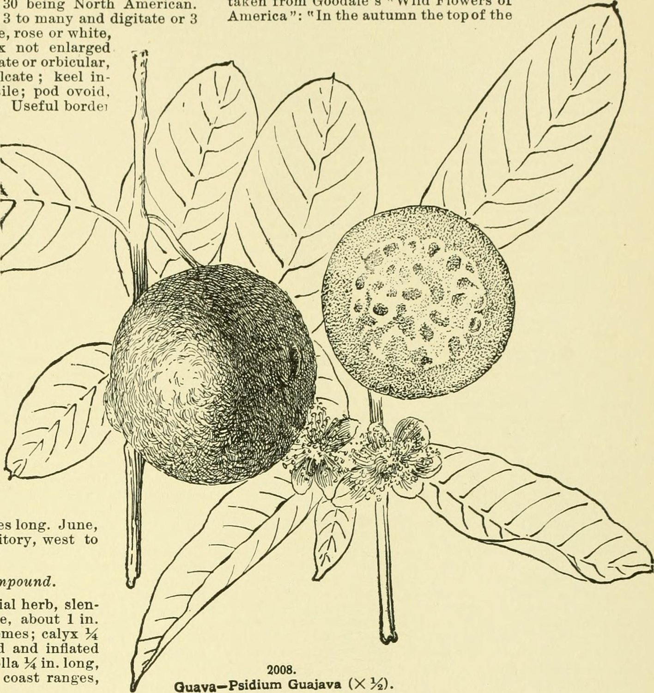
This is the heart of the roadmap. It contains your single highest-leverage skill: crop regulation — deliberately forcing a high-quality, high-price winter crop. Egypt's commercial guava system is built on exactly this, and there's a tested local protocol below. Master Section 5 and you change your economics.
The one fact that explains everything here: guava fruits on current-season new shoots. No new shoots = no fruit. So you manage the tree — by pruning, water, and chemistry — to push flushes of new growth when you want fruit.
Guava = Psidium guajava L., family Myrtaceae. Evergreen, shallow-rooted, very adaptable; tolerates salinity/alkalinity up to ~pH 8.2 and some drought — a good fit for Delta soils.
🇪🇬 White-flesh cultivars grown in Egypt:
Global white benchmarks worth knowing / trialing:
Rootstocks: most guava is own-rooted (from layers/cuttings) or on seedling P. guajava. If wilt or nematodes appear in your soil, dwarfing/resistant rootstocks like Psidium friedrichsthalianum (tolerant to wilt + nematodes) matter — see Pest & Disease Management.
Rule #1: White-guava cultivars do NOT come true from seed. Seed is only for raising rootstocks. To multiply a good white tree, clone it.
Ranked by what works for a commercial grower:
Step-by-step: PlantPropagationTips — air layering guava.
Wedge grafting (softwood) — the nursery standard for a strong tap-root (better on wilt-prone clay than own-rooted layers).
Stooling / tongue layering — Indian nurseries mass-produce own-rooted plants this way (tongue layering in polybag best). Plain mound layering survives poorly — skip.
Cuttings — root poorly without mist + hormone; low priority.
Tissue culture — relevant only if you buy certified disease-free plants (e.g., VNR), not DIY.
| System | Spacing | Trees/ha | Notes |
|---|---|---|---|
| Traditional | 5–6 m × 5–6 m | ~277–400 | Old Egyptian flood layout |
| High-Density (HDP) | 3 m × 1.5–2 m | ~1,600–2,200 | Earlier, higher early yields; drip-fed |
| Meadow orcharding (ultra-HDP) | 2 m × 1 m | 5,000 | CISH flagship: 40–60 t/ha, fruits year 1, but needs drip + disciplined hard pruning |
Training: open-centre/vase is the default and gives good airflow (important against disease in the humid Delta). Espalier (flat 2-D) suits very high density and easy spraying/picking.
🇪🇬 For Kafr El Dawwar: if converting to drip, trialing HDP (3×2 m) or meadow (2×1 m) on a small block first could dramatically raise yield and let you control the crop precisely. Don't convert the whole farm at once. Resources: High-Density Guava Plantation (AgriFarming) · Meadow orcharding (ICAR-CIWA).
Remember: pruning both shapes the tree AND triggers the next fruiting flush (because fruit comes on new shoots).
Resources: AgriFarming — guava grafting/pruning/training. 🇪🇬 Arabic: AgriCEG — pruning the guava tree; search YouTube "تقليم الجوافة".
This is how you shift harvest into the high-value winter window and turn poor fruit into export-grade fruit. Egypt already does a crude version; the goal is to do it scientifically.
Why it matters: guava can flower 2–3 times a year. In Indian terms these are bahars:
The whole game: suppress the poor rainy crop and force a heavy, high-quality winter crop.
Read these carefully: ⭐ Benha University — Physiological Studies on Flowering & Fruiting of Guava (PDF) (your exact context, exact doses) · Crop Regulation in Guava: A Review.
⚠️ Always trial a new protocol on a small block first, record everything, and compare against your usual trees before scaling.
Full list in Resource Library.
→ Next: feed the crop in Plant Nutrition & Fertigation and protect it in Pest & Disease Management.
هذه قلب الدليل. تحتوي على مهارتك الأعلى أثرًا: تنظيم الحمل — التحضير العمدي لـمحصول شتوي عالي الجودة والسعر. نظام الجوافة التجاري في مصر مبني على هذا تحديدًا، وهناك بروتوكول محلي مُختبَر بالأسفل. أتقن القسم ٥ يتغيّر اقتصادك.
الحقيقة الواحدة التي تفسّر كل ما هنا: الجوافة تثمر على النموّات الحديثة لموسمها الحالي. لا نموّ جديد = لا ثمر. لذا تدير الشجرة — بالتقليم والماء والكيمياء — لدفع موجات نموّ جديد حين تريد الثمر.
الجوافة = Psidium guajava L.، عائلة الآسيّة (Myrtaceae). دائمة الخضرة، سطحية الجذور، عالية التأقلم؛ تتحمّل الملوحة/القلوية حتى ~pH 8.2 وبعض الجفاف — ملائمة لتُرَب الدلتا.
🇪🇬 أصناف اللب الأبيض المزروعة في مصر:
مراجع بيضاء عالمية يُستحسن معرفتها/تجربتها:
الأصول: معظم الجوافة بجذورها الذاتية (من الترقيد/العُقَل) أو على بادرة P. guajava. إن ظهر الذبول أو النيماتودا في تربتك، تهمّ الأصول المقزّمة/المقاومة مثل Psidium friedrichsthalianum (متحمّل للذبول + النيماتودا) — انظر إدارة الآفات والأمراض.
القاعدة الأولى: أصناف الجوافة البيضاء لا تأتي مطابقة من البذرة. البذرة فقط لتربية الأصول. لإكثار شجرة بيضاء جيّدة، استنسخها.
مُرتّبًا بحسب ما ينجح للمزارع التجاري:
خطوة بخطوة: PlantPropagationTips — الترقيد الهوائي للجوافة.
التطعيم بالشق (القلم الغضّ) — معيار المشتل لجذر وتدي قوي (أفضل على الطين المعرّض للذبول من الجذور الذاتية).
الترقيد بالتطويق / الترقيد اللساني — مشاتل الهند تنتج به جذورًا ذاتية بكثرة (اللساني في كيس هو الأفضل). الترقيد بالتلال البسيط بقاؤه ضعيف — تجاهله.
العُقَل — تجذيرها ضعيف بلا رذاذ + هرمون؛ أولوية منخفضة.
زراعة الأنسجة — تهمّ فقط إن اشتريت شتلات معتمدة خالية من الأمراض (مثل VNR)، لا التصنيع الذاتي.
| النظام | المسافة | شجرة/هكتار | ملاحظات |
|---|---|---|---|
| التقليدي | ٥–٦ م × ٥–٦ م | ~٢٧٧–٤٠٠ | تخطيط الغمر المصري القديم |
| عالي الكثافة (HDP) | ٣ م × ١٫٥–٢ م | ~١٦٠٠–٢٢٠٠ | إثمار مبكّر، محصول مبكّر أعلى؛ بالتنقيط |
| بستنة المرج (فائقة الكثافة) | ٢ م × ١ م | ٥٠٠٠ | نظام CISH الرائد: ٤٠–٦٠ طن/هكتار، يثمر السنة ١، لكن يحتاج تنقيطًا + تقليمًا جائرًا منضبطًا |
التربية: الكأس المفتوح هو الافتراضي ويعطي تهوية جيّدة (مهمّ ضدّ الأمراض في رطوبة الدلتا). والإسبالير (مسطّح ثنائي البُعد) يلائم الكثافة العالية جدًا وسهولة الرش والقطف.
🇪🇬 لكفر الدوار: إن تحوّلت للتنقيط، تجربة عالي الكثافة (٣×٢ م) أو المرج (٢×١ م) على قطعة صغيرة أولًا قد ترفع المحصول كثيرًا وتتيح ضبط الحمل بدقّة. لا تحوّل المزرعة كلها دفعةً واحدة. مصادر: الزراعة الكثيفة للجوافة (AgriFarming) · بستنة المرج (ICAR-CIWA).
تذكّر: التقليم يشكّل الشجرة ويحفّز موجة الإثمار التالية معًا (لأن الثمر يأتي على النموّ الحديث).
مصادر: AgriFarming — تطعيم/تقليم/تربية الجوافة. 🇪🇬 عربي: AgriCEG — تقليم شجرة الجوافة؛ ابحث في يوتيوب «تقليم الجوافة».
هكذا تنقل الحصاد إلى نافذة الشتاء عالية القيمة وتحوّل الثمار الرديئة إلى ثمار تصديرية. مصر تفعل نسخة بدائية من هذا؛ والهدف فعله علميًا.
لماذا يهمّ: يمكن للجوافة أن تزهر ٢–٣ مرات سنويًا. بالمصطلح الهندي تُسمّى هذه الموجات بهارات:
اللعبة كلها: اكبح المحصول الصيفي الرديء واصنع محصولًا شتويًا غزيرًا عالي الجودة.
اقرأ هذه بعناية: ⭐ جامعة بنها — دراسات فسيولوجية على إزهار وإثمار الجوافة (PDF) (سياقك تحديدًا، بالجرعات) · تنظيم الحمل في الجوافة: مراجعة.
⚠️ جرّب أي بروتوكول جديد على قطعة صغيرة أولًا، سجّل كل شيء، وقارن بأشجارك المعتادة قبل التعميم.
القائمة الكاملة في مكتبة المصادر.
→ التالي: غذِّ المحصول في تغذية النبات والتسميد بالري واحمِه في إدارة الآفات والأمراض.
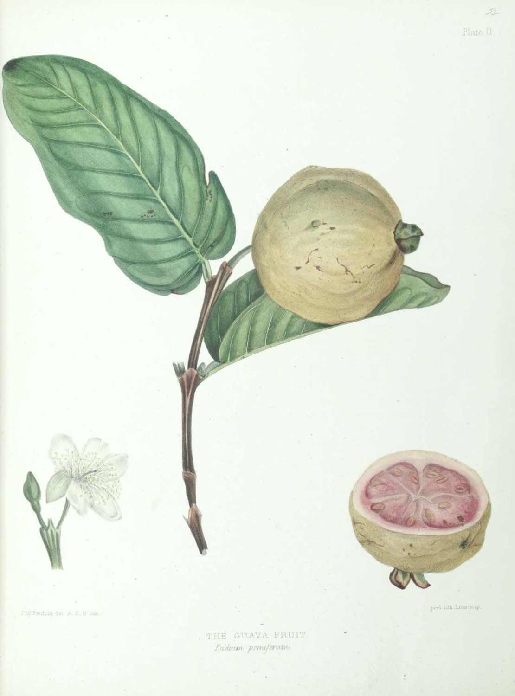
The shift you're making: from "fertilize by habit" to "feed the tree exactly what a soil + leaf test says it needs, when it needs it." On alkaline Delta clay, the right micronutrients and fertigation are often worth more than piling on more N-P-K.
Two tests drive the whole program:
Where to test: Damanhour University, SWERI, or Saba Basha lab — see Egypt Local Hub. How to read results: Foundations & How to Learn §3 + Leaf Tissue Analysis (WSU).
| Stage | Ratio emphasis | Why | Frequency |
|---|---|---|---|
| Young (year 1) | Balanced 10-10-10 / 8-8-8 | Build roots & shoots | Monthly |
| Bearing trees | High potassium (e.g., 6-2-12, 8-3-9) | K drives fruit size, sweetness (TSS), quality | 3–4 splits/year |
A common Indian baseline for a mature tree is roughly 100 g N : 40 g P : 40 g K per year, scaled up with age and yield; high-density/fertigated programs go well above this in small frequent doses.
🇪🇬 Egyptian organic base: ~10 m³ well-rotted manure per feddan plus ~200–250 kg single superphosphate per feddan, incorporated in the root zone. Organic matter does double duty on heavy clay — structure and salinity buffering (see Soil, Water & Irrigation §5).
On alkaline Delta soils, iron (Fe) and zinc (Zn) get locked up and roots can't take them up — so foliar feeding is essential, not optional. Guava is especially prone to zinc deficiency; it also needs Fe, Mn, B, Mo.
Match any deficiency to a picture in the CTAHR Visual Symptoms guide before spraying. Foliar feeding gives a fast but temporary correction — use it for acute symptoms, alongside (not instead of) a soil program.
Once you have drip (Soil, Water & Irrigation §4), deliver soluble N-P-K + micros through the system, little and often, matched to growth stage:
| Growth stage | Nutrient emphasis |
|---|---|
| Vegetative flush (new shoots) | Higher N |
| Flowering | Balanced; boron, moderate N |
| Fruit development / sizing | High K; calcium; micros |
Fertigation can save up to ~60% water and markedly raise fruit number and size — ideal for water economy and salinity management in the Delta. Equipment & golden rules are in Soil, Water & Irrigation §4.
Ready-made schedules to adapt (not copy blindly — adjust to your test results):
Your winter-crop forcing (Guava Cultivation Science §5) is also a nutrition event: after the 4-month water stress, the plough + manure + fertilize + resume irrigation step is what powers the new flush. Time your heaviest feeding to support that deliberate flush, and lean on high-K + boron through fruit development to maximize the quality premium of the winter fruit.
→ Next: Pest & Disease Management.
التحوّل الذي تجريه: من «التسميد بالعادة» إلى «تغذية الشجرة بما يقوله تحليل التربة + الأوراق تحديدًا، حين تحتاجه». على طين الدلتا القلوي، العناصر الصغرى الصحيحة والرسمدة كثيرًا ما تساوي أكثر من تكويم المزيد من NPK.
تحليلان يحرّكان البرنامج كله:
أين تحلّل: جامعة دمنهور، معهد بحوث الأراضي والمياه، أو معمل سابا باشا — انظر المركز المحلي في مصر. كيف تقرأ النتائج: الأساسيات وكيفية التعلّم §٣ + تحليل الأنسجة الورقية (WSU).
| المرحلة | تركيز النسبة | لماذا | التكرار |
|---|---|---|---|
| صغيرة (السنة ١) | متوازن 10-10-10 / 8-8-8 | بناء الجذور والأفرع | شهريًا |
| أشجار مثمرة | بوتاسيوم عالٍ (مثل 6-2-12، 8-3-9) | البوتاسيوم يحرّك حجم الثمرة والحلاوة (TSS) والجودة | ٣–٤ دفعات/سنة |
القاعدة الهندية الأساسية للشجرة المثمرة ~١٠٠ جم نيتروجين : ٤٠ جم فوسفور : ٤٠ جم بوتاسيوم سنويًا، تتصاعد مع العمر والمحصول؛ وبرامج الكثافة العالية/الرسمدة تتجاوز هذا كثيرًا بجرعات صغيرة متكرّرة.
🇪🇬 القاعدة العضوية المصرية: ~١٠ م³ سماد بلدي متحلّل للفدّان زائد ~٢٠٠–٢٥٠ كجم سوبر فوسفات أحادي للفدّان، تُخلط في منطقة الجذور. المادة العضوية تؤدّي دورًا مزدوجًا على الطين الثقيل — بناءً وتخفيفًا للملوحة (انظر التربة والمياه والري §٥).
على تُرَب الدلتا القلوية، يُقفَل الحديد (Fe) والزنك (Zn) فلا تستطيع الجذور امتصاصهما — لذا الرش الورقي ضروري، لا اختياري. الجوافة معرّضة بشدّة لنقص الزنك؛ وتحتاج أيضًا Fe وMn وB وMo.
طابِق أي نقص بصورة في دليل أعراض النقص من CTAHR قبل الرش. الرش الورقي يعطي تصحيحًا سريعًا لكنه مؤقّت — استخدمه للأعراض الحادّة، إلى جانب (لا بدلًا من) برنامج أرضي.
ما إن يصير لديك تنقيط (التربة والمياه والري §٤)، أوصِل NPK الذائب + العناصر الصغرى عبر النظام، قليلًا ومتكرّرًا، مطابقًا لمرحلة النموّ:
| مرحلة النموّ | تركيز العنصر |
|---|---|
| النموّ الخضري (نموّات جديدة) | نيتروجين أعلى |
| الإزهار | متوازن؛ بورون، نيتروجين معتدل |
| تطوّر الثمرة / تكبيرها | بوتاسيوم عالٍ؛ كالسيوم؛ عناصر صغرى |
الرسمدة قد توفّر حتى ~٦٠٪ ماءً وترفع عدد الثمار وحجمها بوضوح — مثالية لاقتصاد الماء وإدارة الملوحة في الدلتا. المعدّات والقواعد الذهبية في التربة والمياه والري §٤.
جداول جاهزة للتكييف (لا للنسخ الأعمى — اضبطها على نتائج تحليلك):
تحضيرك للمحصول الشتوي (علم زراعة الجوافة §٥) هو أيضًا حدث تغذوي: بعد الإجهاد المائي ٤ أشهر، تكون خطوة الحرث + السماد البلدي + التسميد + إعادة الري هي ما يشغّل الاندفاع الجديد. وقّت أثقل تسميد لدعم هذا الاندفاع العمدي، واعتمد على البوتاسيوم العالي + البورون خلال تطوّر الثمرة لتعظيم علاوة جودة الثمار الشتوية.
→ التالي: إدارة الآفات والأمراض.
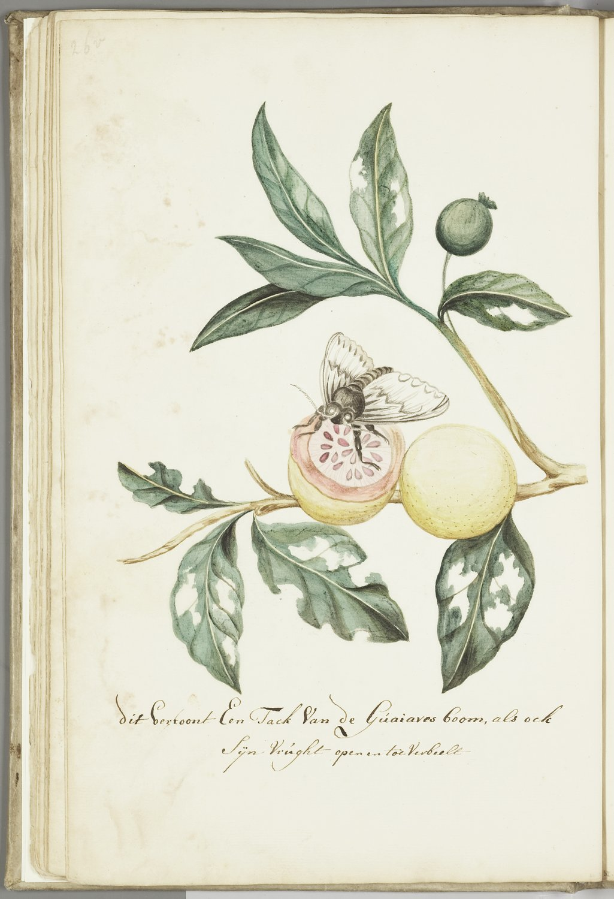
The one thing that matters most: in Egypt, the "dood" (worm) inside your guava is almost always a fruit fly larva — the peach fruit fly (Bactrocera zonata) or the Mediterranean fruit fly (Ceratitis capitata, medfly). These two cause the large majority of guava losses in the Delta. Master fruit-fly management + orchard sanitation and you solve 70–80% of your pest problem. Everything else is secondary.
IPM = Integrated Pest Management. Instead of spraying on a calendar and hoping, you combine several safe, cheap tools and only spray when monitoring proves you must. Five layers, in the order you rely on them:
Learn the concept: Clemson — Principles of IPM · Vikaspedia — Guava IPM.
The lifecycle (why sanitation works): female stings the ripening fruit → eggs hatch into maggots that rot the pulp → mature maggots drop to the soil and pupate → adults emerge and repeat. The maggot is inside the fruit (sprays can't reach it) and the pupa is in the soil — which is exactly why the two killer tactics are (a) destroy infested fruit and (b) disturb/flood the soil.
Monitor first (before spraying):
Control — layer these (area-wide IPM):
Resources: ⭐ The Mediterranean Fruit Fly, a Key Pest of Citrus in Egypt (Oxford JIPM) (best Egypt-specific reference) · FAO/IAEA Trapping Guidelines · GF-120 product + label. 🇪🇬 Arabic: Bashaier — مكافحة ذبابة الفاكهة في الجوافة.
Resource: ⭐ UF/IFAS — Guava Pests & Beneficial Insects (IG072) (illustrated; registered-insecticide table).
Resources: UF/IFAS — Guava disease management (PG133) · Diseases of Guava & Their Management (free PDF) · First report of M. enterolobii on guava in Egypt.
In IPM, pesticides are the last tool, used surgically. Egyptian medfly rules even prohibit chemical sprays as the sole control. Misuse also destroys your export market.
Where to check what's legal: 🇪🇬 Egypt Agricultural Pesticides Committee (APC) + the annual "Technical Recommendations" booklet · EU Pesticides Database (MRLs) · USDA FAS MRL database.
→ Next: Modern & Precision Ag Tech to monitor all this cheaply.
أهمّ شيء على الإطلاق: في مصر، «الدود» داخل جوافتك هو غالبًا يرقة ذبابة فاكهة — ذبابة فاكهة الخوخ (Bactrocera zonata) أو ذبابة فاكهة البحر المتوسط (Ceratitis capitata). هاتان تسبّبان معظم خسائر الجوافة في الدلتا. أتقن مكافحة ذبابة الفاكهة + النظافة الحقلية تحلّ ٧٠–٨٠٪ من مشكلة آفاتك. وكل ما عداه ثانوي.
المكافحة المتكاملة (IPM) = بدل الرش بالتقويم والأمل، تجمع عدّة أدوات آمنة رخيصة ولا ترشّ إلا حين يثبت الرصد أنك يجب أن ترشّ. خمس طبقات بترتيب اعتمادك عليها:
تعلّم المفهوم: Clemson — مبادئ المكافحة المتكاملة · Vikaspedia — المكافحة المتكاملة للجوافة.
دورة الحياة (لماذا تنفع النظافة): تلسع الأنثى الثمرة الناضجة ← يفقس البيض إلى يرقات تُعفِّن اللب ← تسقط اليرقات الناضجة إلى التربة وتتعذّر ← تخرج البالغات وتُعيد. اليرقة داخل الثمرة (لا يصلها الرش) والعذراء في التربة — لذا التكتيكان القاتلان هما (أ) إتلاف الثمار المصابة و(ب) تقليب/غمر التربة.
ارصد أولًا (قبل أي رش):
المكافحة — اجمع هذه (مكافحة على نطاق المنطقة):
مصادر: ⭐ ذبابة المتوسط، آفة رئيسية للموالح في مصر (Oxford JIPM) (أفضل مرجع مصري) · إرشادات النصب FAO/IAEA · منتج GF-120 + الملصق. 🇪🇬 عربي: بشاير — مكافحة ذبابة الفاكهة في الجوافة.
مصدر: ⭐ UF/IFAS — آفات الجوافة والحشرات النافعة (IG072) (مصوّر؛ جدول مبيدات مسجّلة).
مصادر: UF/IFAS — إدارة أمراض الجوافة (PG133) · أمراض الجوافة وإدارتها (PDF مجاني) · أول تسجيل لـ M. enterolobii على الجوافة في مصر.
في المكافحة المتكاملة، المبيدات الملاذ الأخير، تُستخدم بدقّة جراحية. وقواعد ذبابة المتوسط المصرية تمنع الرش الكيميائي كوسيلة وحيدة. وسوء الاستخدام يدمّر سوق تصديرك أيضًا.
أين تتحقّق ممّا هو قانوني: 🇪🇬 لجنة مبيدات الآفات الزراعية (APC) + كتيّب «التوصيات الفنية» السنوي · قاعدة بيانات مبيدات الاتحاد الأوروبي (MRLs) · قاعدة USDA FAS للمتبقّيات.
→ التالي: التقنيات الحديثة والزراعة الدقيقة لرصد كل هذا بثمن زهيد.
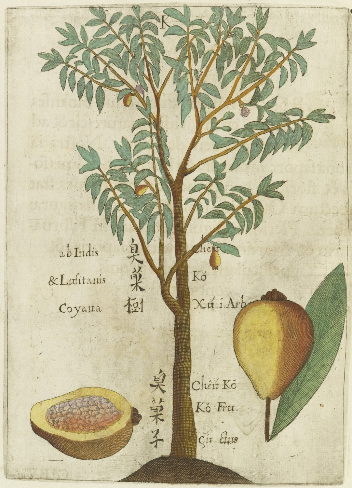
The honest headline: the highest-value, lowest-cost technology for you is free satellite imagery on your phone — not drones, not expensive sensors. A whole "start cheaply" kit (annual soil test + EC/pH pens + a battery drip timer + a Venturi injector) costs under ~5,000 EGP. Add tech only when it earns its keep.
(Prices in EGP fluctuate — confirm at purchase.)
You can't manage what you don't measure. Before any gadget:
NDVI ("Normalized Difference Vegetation Index") is a satellite-derived map of how green/healthy your canopy is. Stressed trees (water, nutrient, pest) show up before your eye catches them, so you can scout the exact spot.
Workflow: check NDVI weekly → if a zone looks weak, go stand under those trees → diagnose (water? nutrient? fruit fly? wilt?) using Plant Nutrition & Fertigation / Pest & Disease Management → act on that zone only. This is precision agriculture on a phone, for free.
⚠️ In Egypt, private drone ownership is effectively banned (Law 216/2017): you need a Ministry of Defense permit, and unauthorized use carries heavy fines (up to ~50,000 EGP) and even prison. Do not buy a drone.
If you want drone spraying/mapping, hire a licensed agricultural-drone service rather than owning one. For most smallholders, free satellite NDVI (Section 2) delivers most of the benefit at zero cost and zero legal risk.
1. Annual soil + water lab test (~few hundred EGP)
2. EC pen + pH pen for your own spot-checks (~few hundred EGP each)
3. Free OneSoil NDVI on your phone (free)
4. Battery drip timer + Venturi injector (the bulk of the budget)
5. Plantix + Hodhod + a weather app (free)
→ Only later: soil-moisture sensors, weather station, hired drone service.
→ Next: protect your income after the tree in Post-Harvest & Value Addition.
العنوان الصريح: أعلى تقنية قيمةً وأقلّها تكلفةً لك هي صور الأقمار الصناعية المجانية على هاتفك — لا الطائرات بدون طيار ولا المستشعرات الغالية. وكامل عُدّة «ابدأ بثمن زهيد» (تحليل تربة سنوي + أقلام EC/pH + مؤقّت تنقيط بطارية + حاقن فنتوري) تكلّف أقل من ~٥٠٠٠ جنيه. أضِف التقنية فقط حين تستحق ثمنها.
(الأسعار بالجنيه متغيّرة — تأكّد عند الشراء.)
لا تستطيع إدارة ما لا تقيسه. قبل أي جهاز:
NDVI («مؤشّر الغطاء النباتي») خريطة من الأقمار الصناعية لمدى خضرة/صحّة مجموعك الخضري. الأشجار المجهَدة (ماء، عنصر، آفة) تظهر قبل أن تلتقطها عينك، فتكشف البقعة بالضبط.
سير العمل: افحص NDVI أسبوعيًا ← إن بدت منطقة ضعيفة، اذهب وقف تحت تلك الأشجار ← شخّص (ماء؟ عنصر؟ ذبابة فاكهة؟ ذبول؟) عبر تغذية النبات والتسميد بالري / إدارة الآفات والأمراض ← تصرّف على تلك المنطقة فقط. هذه زراعة دقيقة على الهاتف، مجانًا.
⚠️ في مصر، امتلاك الطائرات بدون طيار للأفراد ممنوع فعليًا (القانون ٢١٦/٢٠١٧): تحتاج تصريح وزارة الدفاع، والاستخدام غير المصرّح به يحمل غرامات ثقيلة (حتى ~٥٠٠٠٠ جنيه) وحتى السجن. لا تشترِ درون.
إن أردت رشًّا/مسحًا بالدرون، استأجر خدمة درون زراعي مرخّصة بدل الامتلاك. ولمعظم المزارعين الصغار، يحقّق NDVI المجاني من الأقمار (القسم ٢) معظم الفائدة بلا تكلفة ولا مخاطرة قانونية.
١. تحليل تربة + ماء سنوي (~بضع مئات من الجنيهات)
٢. قلم EC + قلم pH لفحصك الذاتي (~بضع مئات لكلٍّ)
٣. NDVI مجاني من OneSoil على هاتفك (مجاني)
٤. مؤقّت تنقيط بطارية + حاقن فنتوري (معظم الميزانية)
٥. Plantix + هدهد + تطبيق طقس (مجاني)
← لاحقًا فقط: مستشعرات رطوبة، محطة طقس، خدمة درون مستأجَرة.
→ التالي: احمِ دخلك بعد الشجرة في ما بعد الحصاد والتصنيع.
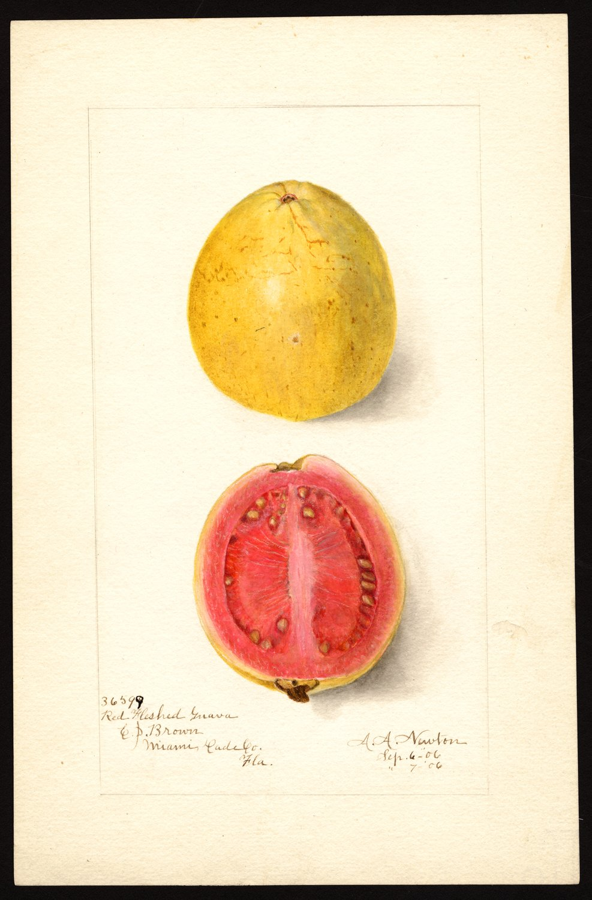
Your fastest money lives here, and it's nearly free. Guava is one of the most perishable fruits on earth — a winter-crop guava lasts only 6–9 days at room temperature; a summer one 2–4 days. Most of a small grower's lost income is lost AFTER the fruit leaves the tree — in heat, bruising, and bad timing. Fixing handling costs knowledge and discipline, not cash, and it pays back this season.
Sorting & grading: remove every damaged, cracked, sunburned, stung, or over-soft fruit at once — one rotting fruit infects the whole crate (anthracnose spreads on contact). Then grade by size + ripeness + freedom from blemish into uniform lots. Buyers pay more for uniform crates.
Storage life — memorize:
| Condition | Shelf life |
|---|---|
| Winter crop, ambient | 6–9 days |
| Summer crop, ambient | 2–4 days |
| Ambient + good ventilation | ~14 days |
| Proper cold storage (~5 °C, sound fruit) | ~2–3 weeks |
Controlled ripening: ripen mature-green fruit at ~20–25 °C with good air (ethylene speeds/evens it) when you want it sale-ready. Never try to ripen fruit that was over-chilled — it just browns.
Resources: ⭐ UC Davis — Guava Produce Facts (the authoritative quick-reference) · FAO — Prevention of Post-Harvest Food Losses (training manual) · FAO — Small-Scale Postharvest Handling Practices. 🇪🇬 Arabic: AOAD — Good Agricultural & Post-Harvest Practices Guide (PDF).
The genius of processing: the bruised, oversized, or over-ripe fruit you can't sell fresh becomes raw material for products that last months.
Everything starts with PURÉE: wash → sort → remove ends/seeds (sieve) → mill to purée. From purée you make:
Start small: you don't need a factory. Begin at kitchen/cottage scale (jam, paste) with sound hygiene, then scale. Food-safety basics: clean hands & premises, food-grade surfaces, clean water; heat + acid + sugar + sealed jars preserve jam/paste; pasteurization + clean sealed bottles for juice. Selling processed food commercially in Egypt falls under NFSA rules and Codex standards — build hygienic habits from day one.
Resources: FAO — Small-Scale Processing of Fruits & Vegetables · CELKAU — Processing of Guava (PDF, jelly/jam/nectar/cheese) · NIFTEM — Guava Pulp project report (PDF).
→ Next: turn better fruit into more money in Business, Marketing & Export.
مالك الأسرع يسكن هنا، وهو شبه مجاني. الجوافة من أسرع الفواكه تلفًا على الأرض — جوافة المحصول الشتوي تعيش ٦–٩ أيام فقط في حرارة الغرفة؛ والصيفية ٢–٤ أيام. معظم خسارة المزارع الصغير تحدث بعد مغادرة الثمرة الشجرة — في الحرارة والكدمات وسوء التوقيت. وإصلاح المعاملة يكلّف معرفةً وانضباطًا، لا مالًا، ويعوّض هذا الموسم.
الفرز والتدريج: أزِل كل ثمرة متضرّرة أو متشقّقة أو محروقة شمسًا أو ملسوعة أو شديدة الليونة فورًا — ثمرة فاسدة واحدة تُعدي الصندوق كله (الأنثراكنوز ينتشر بالتلامس). ثم درّج بـالحجم + النضج + خلوّ العيب إلى دفعات منتظمة. المشترون يدفعون أكثر للصناديق المنتظمة.
ملخّص العمر التخزيني — احفظه:
| الحالة | العمر التخزيني |
|---|---|
| محصول شتوي، حرارة الغرفة | ٦–٩ أيام |
| محصول صيفي، حرارة الغرفة | ٢–٤ أيام |
| حرارة الغرفة + تهوية جيّدة | ~١٤ يومًا |
| تخزين بارد سليم (~٥°م، ثمار سليمة) | ~٢–٣ أسابيع |
الإنضاج المتحكَّم فيه: أنضِج الثمار الخضراء الناضجة عند ~٢٠–٢٥°م بتهوية جيّدة (الإيثيلين يسرّعه ويوحّده) حين تريدها جاهزة للبيع. لا تحاول إنضاج ثمرة بُرِّدت أكثر من اللازم — ستبنّ فقط.
مصادر: ⭐ UC Davis — حقائق الجوافة بعد الحصاد (المرجع السريع المعتمد) · الفاو — منع فاقد ما بعد الحصاد (دليل تدريبي) · الفاو — ممارسات المناولة صغيرة النطاق. 🇪🇬 عربي: AOAD — دليل الممارسات الجيدة في الزراعة وما بعد الحصاد (PDF).
عبقرية التصنيع: الثمار المكدومة أو كبيرة الحجم أو الزائدة النضج التي لا تبيعها طازجة تصير مادة خام لمنتجات تعيش شهورًا.
كل شيء يبدأ بالـ«البوريه» (اللب المهروس): اغسل ← افرز ← أزِل الأطراف/البذور (نخل) ← اطحن للب. ومن اللب تصنع:
ابدأ صغيرًا: لا تحتاج مصنعًا. ابدأ على نطاق المطبخ/المنزل (مربى، عجوة) بنظافة سليمة، ثم تدرّج. أساسيات سلامة الغذاء: نظافة اليدين والمكان، أسطح غذائية، ماء نظيف؛ الحرارة + الحموضة + السكر + البرطمانات المحكمة تحفظ المربى/العجوة؛ والبسترة + الزجاجات النظيفة المحكمة للعصير. بيع الغذاء المصنّع تجاريًا في مصر يخضع لقواعد الهيئة القومية لسلامة الغذاء (NFSA) ومعايير الدستور الغذائي (Codex) — ابنِ عادات نظافة من اليوم الأول.
مصادر: الفاو — التصنيع صغير النطاق للفاكهة والخضر · CELKAU — تصنيع الجوافة (PDF، جيلي/مربى/نكتار/عجوة) · NIFTEM — تقرير مشروع لب الجوافة (PDF).
→ التالي: حوّل ثمارًا أفضل إلى مال أكثر في الأعمال والتسويق والتصدير.
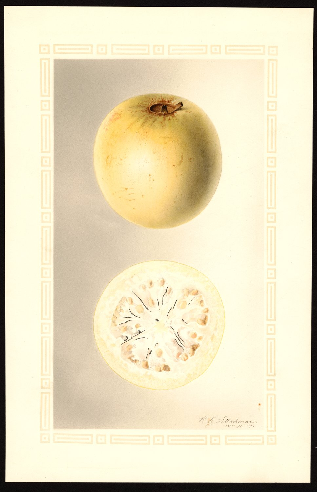
The income ladder, cheapest rung first: (1) lose less (post-harvest — Post-Harvest & Value Addition); (2) sell smarter (grading, cooperatives, fewer middlemen); (3) add value (paste/jam/juice — Post-Harvest & Value Addition); (4) export (the big prize, the hardest). This note covers rungs 2 and 4 plus the money discipline under all of them.
Most small farmers don't know their true profit per feddan because they never write anything down. Two habits change everything:
Keep two records (a notebook or phone spreadsheet is enough, cash-basis):
Calculate GROSS MARGIN per feddan — the number that tells you if guava (and each practice) is worth it:
Gross Margin = Gross Income − Variable Costs (variable costs = costs that change with how much you grow: fertilizer, labor, packaging, harvest, transport; excludes fixed costs like land.)
Track it season over season. When your post-harvest and crop-regulation improvements work, the gross margin rises — that's your proof. Then budget the next season from real numbers.
Resources: FAO — Economics for Farm Management (i3228e PDF) (best beginner start) · Cornell Small Farms — Record Keeping.
The middleman problem: right now traders between your tree and the consumer skim the value. Egyptian research is blunt about the fix — when farmers organize into associations and sell their own produce directly in wholesale markets, household income rises roughly +7% (village), +15% (governorate), +22% (metropolitan market).
Cooperatives / farmer associations = your highest-leverage move. A registered group lets you:
Contract farming = the income jump. Egyptian studies found smallholders raised income +43% with conventional export-crop contracts and up to +63% with organic horticultural contracts — a guaranteed buyer and price before harvest, huge for a perishable crop.
Selling channels, easy → advanced: local/village market → governorate/metropolitan wholesale → direct/branded (uniform graded crates, a simple trusted name) → contract with an exporter/processor. Branding for a smallholder = consistency (uniform grade, clean packaging, reliable supply), not a fancy logo.
Resources: ⭐ IFAD — Egypt: Smallholder Contract Farming for High-Value & Organic Exports (PDF) (source of the income figures) · FAO — Agricultural Cooperatives (PDF).
The landscape: Egypt is a major fresh-produce exporter with a maturing, EU-harmonized cold-chain and phytosanitary system. Guava is a niche but real Egyptian export (~10,000 t/yr; ~$16M in 2023) — a less crowded lane than citrus or mango, serving the Gulf (Saudi ~44%, Jordan), EU, and Russia. Behira is the #1 guava governorate, so you're well placed.
THE central obstacle: the Mediterranean fruit fly (medfly). Guava is a prime medfly host, so importing countries demand proof of fruit-fly freedom — the #1 reason guava export is hard. You overcome it with an approved phytosanitary treatment + a government phytosanitary certificate:
Certifications to build toward:
Your realistic export pathway:
Join a cooperative/association
→ get GLOBALG.A.P. PFA (entry level), with HEIA's help
→ partner with an established EXPORTER / pack-house
(they handle cold chain + fruit-fly treatment + import paperwork;
you supply certified, well-handled fruit)
→ climb toward full GLOBALG.A.P. IFA over time
Don't try to export solo first. Supply a reputable exporter, learn the standards, then expand.
Your #1 institutional contact: ⭐ HEIA (Horticultural Export Improvement Association) — 700+ members; trains small farmers, supervises pack-houses, prepares certification. HEIACert. Also: USDA FAS — Egypt export regulations · market data: Tridge — Fresh Guava, Selina Wamucii — Egypt Guavas.
→ Plug into the people and institutions that make all this real: Egypt Local Hub.
سُلّم الدخل، الدرجة الأرخص أولًا: (١) اخسر أقل (ما بعد الحصاد — ما بعد الحصاد والتصنيع)؛ (٢) بِع بذكاء (تدريج، جمعيات تعاونية، وسطاء أقل)؛ (٣) أضِف قيمة (عجوة/مربى/عصير — ما بعد الحصاد والتصنيع)؛ (٤) صدّر (الجائزة الكبرى، الأصعب). تغطّي هذه الملاحظة الدرجتين ٢ و٤ إضافةً لانضباط المال تحتها جميعًا.
معظم المزارعين الصغار لا يعرفون ربحهم الحقيقي للفدّان لأنهم لا يكتبون شيئًا. عادتان تغيّران كل شيء:
امسك سجلّين (دفتر أو شيت على الهاتف يكفي، بالأساس النقدي):
احسب الهامش الإجمالي للفدّان — الرقم الذي يخبرك هل الجوافة (وكل ممارسة) تستحق:
الهامش الإجمالي = إجمالي الدخل − التكاليف المتغيّرة (التكاليف المتغيّرة = ما يتغيّر بحجم إنتاجك: سماد، عمالة، تعبئة، حصاد، نقل؛ ولا يشمل التكاليف الثابتة كالأرض.)
تابِعه موسمًا بعد موسم. حين تنجح تحسيناتك في ما بعد الحصاد وتنظيم الحمل، يرتفع الهامش الإجمالي — هذا برهانك. ثم خطّط الموسم التالي من أرقام حقيقية.
مصادر: الفاو — اقتصاديات إدارة المزرعة (i3228e PDF) (أفضل بداية للمبتدئ) · Cornell Small Farms — مسك السجلات.
مشكلة الوسيط: الآن يقتطع التجار بين شجرتك والمستهلك القيمة. والبحث المصري صريح في الحل — حين ينظّم المزارعون أنفسهم في جمعيات ويبيعون منتجهم مباشرةً في أسواق الجملة، يرتفع دخل الأسرة تقريبًا +٧٪ (سوق القرية)، +١٥٪ (المحافظة)، +٢٢٪ (السوق الكبرى).
الجمعيات التعاونية / روابط المزارعين = أعلى رافعة لك. المجموعة المسجَّلة تتيح لك:
الزراعة التعاقدية = قفزة الدخل. وجد البحث المصري أن المزارعين الصغار رفعوا الدخل +٤٣٪ بعقود محاصيل التصدير التقليدية وحتى +٦٣٪ بعقود البستنة العضوية — مشترٍ وسعر مضمونان قبل الحصاد، أمر هائل لمحصول سريع التلف.
قنوات البيع، من السهل للمتقدّم: سوق القرية المحلي ← جملة المحافظة/الكبرى ← مباشر/ذو علامة (صناديق مدرّجة منتظمة، اسم موثوق بسيط) ← تعاقد مع مصدّر/مصنّع. العلامة للمزارع الصغير = الثبات (رتبة منتظمة، تعبئة نظيفة، توريد موثوق)، لا شعار فاخر.
مصادر: ⭐ IFAD — مصر: الزراعة التعاقدية لصغار المزارعين للصادرات عالية القيمة والعضوية (PDF) (مصدر أرقام الدخل) · الفاو — الجمعيات التعاونية الزراعية (PDF).
المشهد: مصر مصدّر كبير للحاصلات الطازجة بسلسلة تبريد ونظام صحّة نباتية ناضجين ومنسجمين مع الاتحاد الأوروبي. والجوافة صادرة مصرية محدودة لكنها حقيقية (~١٠٠٠٠ طن/سنة؛ ~١٦ مليون دولار في ٢٠٢٣) — مسار أقل ازدحامًا من الموالح أو المانجو، يخدم الخليج (السعودية ~٤٤٪، الأردن)، والاتحاد الأوروبي، وروسيا. والبحيرة محافظة الجوافة رقم ١، فموقعك ممتاز.
العقبة المحورية: ذبابة فاكهة البحر المتوسط. الجوافة عائل رئيسي لها، فتطلب الدول المستوردة إثباتًا للخلوّ من الذبابة — السبب الأول لصعوبة تصدير الجوافة. تتجاوزها بـمعالجة صحّية نباتية معتمدة + شهادة صحّة نباتية حكومية:
شهادات تبني نحوها:
مسار التصدير الواقعي لك:
انضمّ لجمعية تعاونية
← احصل على جلوبال جاب PFA (تمهيدي) بمساعدة HEIA
← اشترك مع مصدّر / محطة تعبئة قائمة
(يتولّون سلسلة التبريد + معالجة الذبابة + أوراق الاستيراد؛
وأنت تورّد ثمارًا معتمدة جيّدة المعاملة)
← ارتقِ نحو جلوبال جاب IFA الكامل مع الوقت
لا تحاول التصدير منفردًا أولًا. ورّد لمصدّر موثوق، تعلّم المعايير، ثم توسّع.
جهة اتصالك المؤسسية رقم ١: ⭐ HEIA (جمعية تحسين صادرات البساتين) — ٧٠٠+ عضو؛ تدرّب صغار المزارعين، تشرف على محطات التعبئة، تجهّز للشهادات. HEIACert. وأيضًا: USDA FAS — لوائح تصدير مصر · بيانات السوق: Tridge — الجوافة الطازجة، Selina Wamucii — جوافة مصر.
→ اتّصل بالناس والمؤسسات التي تجعل كل هذا حقيقة: المركز المحلي في مصر.
You are in the heartland. Behira is Egypt's #1 guava governorate — ~155,000 t/yr, ~43% of national production. Alexandria (next door) is #2. Local experts, research stations, soil labs, certified nurseries, and buyers are all within ~1 hour. This note is your contact book. Most resources here are Arabic — that's correct for local use.
Egyptian guava facts: national production ~365,000 t/yr; harvest runs late summer → late spring (main flush autumn/winter; shiftable via the crop-regulation in Guava Cultivation Science §5); guava is ~Egypt's 10th-largest ag export (~$16M, ~36 markets; top buyers Saudi Arabia, Jordan, UK).
ARC (مركز البحوث الزراعية) — the Ministry of Agriculture's research arm; the largest applied ag-research body in the region. Main site: arc.sci.eg.
| Institute | Arabic | What it does for you | Link |
|---|---|---|---|
| Horticulture Research Institute (HRI) | معهد بحوث البساتين | The core one — has a Semi-Arid Zone Fruits Dept. working on guava; issues guava growing/fertilizing/pruning recommendations | arc.sci.eg/affiliate/14 |
| Plant Protection Research Institute (PPRI) | معهد بحوث وقاية النباتات | Pest/disease control — fruit fly especially; rears biological control agents; IPM advice | under arc.sci.eg |
| Soil, Water & Environment Research Institute (SWERI) | معهد بحوث الأراضي والمياه والبيئة | Soil, water, plant & fertilizer analysis; nematode screening; irrigation/fertilization efficiency | arc.sci.eg/affiliate/29 |
| Central Lab for Agricultural Climate (CLAC) | المعمل المركزي للمناخ الزراعي | Agro-meteorology, frost/heat warnings, weather-based irrigation timing | under arc.sci.eg |
Move: ask your local extension office to connect you to HRI fruit specialists and book SWERI soil + water analysis before you fertilize (Plant Nutrition & Fertigation).
Egypt's extension is a pyramid: Central Admin for Extension → Governorate Directorate → District Dept → village cooperative/extension unit with a local agent (مرشد زراعي).
Your access points:
How advice flows: register at the village cooperative → the agent visits/advises → hard problems escalate to district → directorate technical depts → ARC institutes. Free or near-free.
| University | Faculty | Why relevant | Link |
|---|---|---|---|
| Damanhour University | Faculty of Agriculture (in your governorate) | Closest agronomy faculty; Horticulture/Fruit Science dept; local labs, professors, soil tests | YouTube · damanhour.edu.eg |
| Alexandria University | Faculty of Agriculture (Saba Basha) | ~1 hr; dedicated Soil & Water Analysis Lab accepts farmer samples | agrsaba.alexu.edu.eg · tel +20 3 583 1646 |
| Alexandria University | Faculty of Agriculture (El-Shatby) | Research-heavy; strong pomology/horticulture | alexu.edu.eg |
| Kafrelsheikh University | Faculty of Agriculture | Neighboring Delta governorate; good horticulture labs | agr.kfs.edu.eg |
| Cairo University | Faculty of Agriculture (Giza) | Egypt's flagship pomology dept; national experts | agr.cu.edu.eg |
Faculties often run short courses (دورات تدريبية) and field days, and their labs accept private samples for a fee.
Always do soil + irrigation-water analysis first, then a leaf analysis mid-season. Ask the lab for interpretation, not just numbers.
Behira nurseries / approved seedling outlets: NubaSeed (Km 75 Alex–Cairo Desert Rd), Marina for Agricultural Development (Km 58 Cairo–Alex Desert Rd), Mashatel El-Amari (Rashid).
Reputable fruit nurseries (grafted, true-to-type):
Drip & fertilizer suppliers: EuroDrip Egypt (Giza), Agrimatco, Agromaster. Approved-outlet list (incl. Behira): almaal.org.
Buy guava seedlings only from a certified nursery, and insist on grafted, named cultivars, true-to-type with known rootstock/disease status. Your district extension office can vouch for a reliable local nursery.
Facebook groups (most active local Q&A — join all):
YouTube (Arabic agronomy):
⚠️ Treat random Facebook "spray X at rate Y" advice skeptically — cross-check pesticide doses & PHIs with your extension agent or PPRI (Pest & Disease Management §4). Fruit-fly timing especially must be right.
→ Back to the plan: Master Roadmap · Track it in Progress Tracker & Season Calendar.
أنت في القلب. البحيرة محافظة الجوافة رقم ١ في مصر — ~١٥٥٠٠٠ طن/سنة، ~٤٣٪ من الإنتاج القومي. والإسكندرية المجاورة الثانية. الخبراء المحليون ومحطات البحوث ومعامل التربة والمشاتل المعتمدة والمشترون كلهم في حدود ~ساعة. هذه الملاحظة دفتر هواتفك. معظم المصادر هنا بالعربية — وهذا صحيح للاستخدام المحلي.
حقائق الجوافة المصرية: الإنتاج القومي ~٣٦٥٠٠٠ طن/سنة؛ الحصاد من أواخر الصيف ← أواخر الربيع (الاندفاع الرئيسي خريفًا/شتاءً؛ قابل للتحويل عبر تنظيم الحمل في علم زراعة الجوافة §٥)؛ الجوافة ~عاشر أكبر صادرة زراعية مصرية (~١٦ مليون دولار، ~٣٦ سوقًا؛ كبار المشترين السعودية والأردن والمملكة المتحدة).
مركز البحوث الزراعية — الذراع البحثية لوزارة الزراعة؛ أكبر جهة بحوث زراعية تطبيقية بالمنطقة. الموقع: arc.sci.eg.
| المعهد | الاسم | ماذا يفعل لك | الرابط |
|---|---|---|---|
| معهد بحوث البساتين (HRI) | معهد بحوث البساتين | الأساسي — به قسم فاكهة المناطق شبه الجافة يعمل على الجوافة؛ يصدر توصيات زراعة/تسميد/تقليم الجوافة | arc.sci.eg/affiliate/14 |
| معهد بحوث وقاية النباتات (PPRI) | معهد بحوث وقاية النباتات | مكافحة الآفات/الأمراض — ذبابة الفاكهة خاصةً؛ يربّي عوامل المكافحة الحيوية؛ نصائح مكافحة متكاملة | تحت arc.sci.eg |
| معهد بحوث الأراضي والمياه والبيئة (SWERI) | معهد بحوث الأراضي والمياه والبيئة | تحليل تربة وماء ونبات وسماد؛ فحص النيماتودا؛ كفاءة الري/التسميد | arc.sci.eg/affiliate/29 |
| المعمل المركزي للمناخ الزراعي (CLAC) | المعمل المركزي للمناخ الزراعي | الأرصاد الزراعية، تحذيرات الصقيع/الحرارة، توقيت الري بالطقس | تحت arc.sci.eg |
الإجراء: اطلب من مكتب الإرشاد المحلي ربطك بـأخصّائيي الفاكهة بمعهد البساتين واحجز تحليل تربة + ماء بمعهد الأراضي قبل التسميد (تغذية النبات والتسميد بالري).
الإرشاد المصري هرم: الإدارة المركزية للإرشاد ← مديرية المحافظة ← إدارة المركز ← الجمعية/الوحدة الإرشادية بالقرية ومعها مرشد زراعي محلي.
نقاط وصولك:
كيف تتدفّق النصيحة: سجّل بالجمعية بالقرية ← يزورك المرشد وينصحك ← المشاكل الصعبة تُحال للمركز ← الأقسام الفنية بالمديرية ← معاهد البحوث. مجانًا أو شبه مجانًا.
| الجامعة | الكلية | لماذا تهمّ | الرابط |
|---|---|---|---|
| جامعة دمنهور | كلية الزراعة (في محافظتك) | أقرب كلية زراعة؛ قسم بساتين/فاكهة؛ معامل ومحاضرون وتحاليل تربة محليون | يوتيوب · damanhour.edu.eg |
| جامعة الإسكندرية | كلية الزراعة (سابا باشا) | ~ساعة؛ معمل تحليل تربة ومياه مخصّص يقبل عيّنات المزارعين | agrsaba.alexu.edu.eg · تليفون +20 3 583 1646 |
| جامعة الإسكندرية | كلية الزراعة (الشاطبي) | بحثية؛ أقسام بستنة/بومولوجي قوية | alexu.edu.eg |
| جامعة كفر الشيخ | كلية الزراعة | محافظة دلتا مجاورة؛ معامل بستنة جيّدة | agr.kfs.edu.eg |
| جامعة القاهرة | كلية الزراعة (الجيزة) | قسم البومولوجي الرائد بمصر؛ خبراء قوميون | agr.cu.edu.eg |
غالبًا تنظّم الكليات دورات تدريبية وأيام حقل، ومعاملها تقبل عيّنات خاصة مقابل رسم.
اعمل دائمًا تحليل تربة + ماء ري أولًا، ثم تحليل أوراق منتصف الموسم. واطلب من المعمل التفسير، لا الأرقام فقط.
مشاتل البحيرة / منافذ شتلات معتمدة: نوباسيد (كم ٧٥ طريق إسكندرية–القاهرة الصحراوي)، مارينا للتنمية الزراعية (كم ٥٨ طريق القاهرة–إسكندرية الصحراوي)، مشاتل العماري (رشيد).
مشاتل فاكهة موثوقة (مطعّمة، مطابقة للأصل):
موردو تنقيط وأسمدة: يورودريب مصر (الجيزة)، أجريماتكو، أجروماستر. قائمة المنافذ المعتمدة (تشمل البحيرة): almaal.org.
اشترِ شتلات الجوافة من مشتل معتمد فقط، وأصِرّ على أصناف مسمّاة مطعّمة مطابقة للأصل بأصل وحالة مرضية معروفة. ومكتب الإرشاد بمركزك يضمن لك المشتل المحلي الموثوق.
مجموعات فيسبوك (أنشط مجتمعات سؤال وجواب محلية — انضمّ لكلها):
يوتيوب (إرشاد زراعي عربي):
⚠️ عامِل نصائح فيسبوك العشوائية «رُشّ كذا بمعدّل كذا» بحذر — تحقّق من جرعات المبيدات وفترات الأمان مع مرشدك أو معهد وقاية النباتات (إدارة الآفات والأمراض §٤). توقيت ذبابة الفاكهة خاصةً يجب أن يكون صحيحًا.
→ عودة للخطة: الخريطة الرئيسية · تابِعها في متابعة التقدّم والتقويم الموسمي.
Every resource across the roadmap, gathered and ranked. ⭐ = top pick in its category. Most are free; buy 2–3 foundational books and let the free ecosystem carry the rest. English-first; 🇪🇬 = Arabic / Egypt-specific.
Guava-specific (must-own):
General pomology / fruit science:
Tropical/subtropical fruit (your climate):
Soil & plant nutrition:
IPM & irrigation (free):
Serious fruit-tree / orchard:
Guava & subtropical (India has the strongest content):
🇪🇬 Arabic:
Use Arabic + hobbyist channels for intuition & local context; lean on Indian commercial + US extension channels for rigor.
University extension (free, world-class): UC ANR Fruit & Nut Center · Penn State Extension · Cornell Fruit · WSU Tree Fruit · UF/IFAS (subtropical — closest US climate analog).
Key institutions to follow: ⭐ FAO · ⭐ ICAR-CISH (guava R&D leaders) · CABI + PlantwisePlus Knowledge Bank · UC ANR.
→ Back to Master Roadmap · Next: Progress Tracker & Season Calendar.
كل مصدر عبر الدليل، مجمّعًا ومُرتّبًا. ⭐ = أفضل اختيار في فئته. معظمها مجاني؛ اشترِ ٢–٣ كتب أساسية ودع المنظومة المجانية تكمل الباقي. بالإنجليزية أولًا؛ 🇪🇬 = عربي / خاص بمصر.
خاص بالجوافة (يجب اقتناؤه):
بومولوجي / علم فاكهة عام:
فاكهة استوائية/شبه استوائية (مناخك):
التربة وتغذية النبات:
المكافحة المتكاملة والري (مجاني):
فاكهة/بستان جادّ:
جوافة وشبه استوائي (للهند أقوى محتوى):
🇪🇬 عربي:
استخدم القنوات العربية والهاوية للحدس والسياق المحلي؛ واعتمد على القنوات الهندية التجارية والإرشاد الأمريكي للدقّة.
الإرشاد الجامعي (مجاني، عالمي المستوى): UC ANR Fruit & Nut Center · Penn State Extension · Cornell Fruit · WSU Tree Fruit · UF/IFAS (شبه استوائي — أقرب نظير مناخي أمريكي).
مؤسسات مفتاحية للمتابعة: ⭐ الفاو · ⭐ ICAR-CISH (رواد بحوث الجوافة) · CABI + بنك معرفة PlantwisePlus · UC ANR.
→ عودة إلى الخريطة الرئيسية · التالي: متابعة التقدّم والتقويم الموسمي.
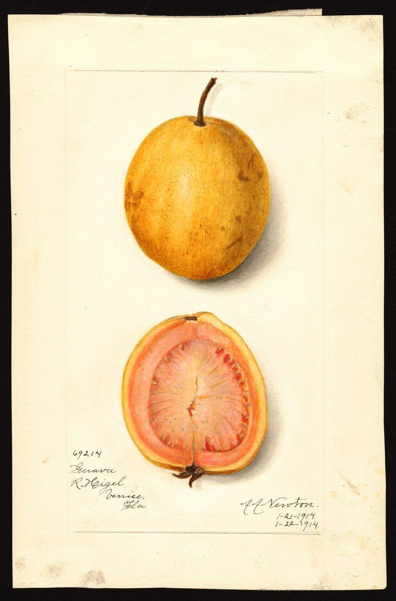
Two tools: a milestone ladder (am I getting more competent?) and a month-by-month calendar (what do I do this month?).
Print this. Check a box only when you can do it on your own farm, not just read about it.
Foundations
Cultivation
Water & nutrition
Protection
Tech & business
When most of these are ticked, you're operating at the world-class tier.
This calendar assumes you're forcing the high-value winter crop (Guava Cultivation Science §5). Adjust dates to your microclimate and your extension agent's local recommendations. Months are approximate.
| Month | Cultivation / crop regulation | Water & nutrition | Pest & disease |
|---|---|---|---|
| Jan–Feb | Winter crop harvest continues; light pruning of harvested wood | Reduce water in cold; foliar micros if deficiency shows | Sanitation; remove mummified fruit; monitor scale/mealybug |
| Mar (late) | ⭐ Begin withholding irrigation (~4 months) to stress & defoliate for the next winter crop; formative pruning of young trees | Stop/curtail irrigation; incorporate manure plan | Hang/refresh fruit-fly traps; scout |
| Apr–May | Deblossom the unwanted rainy bloom (urea 10–15% ± NAA, two sprays ~15 days apart) | Still water-stressed; prepare fertilizer | Trap counts rising? Mealybug/thrips check; conserve beneficials |
| Jun | Trees defoliating under stress; plan the flush | Soil prep; gypsum/leaching if salinity flagged (after harvest of any fruit) | Continue trapping & sanitation |
| Jul | ⭐ Plough, manure, fertilize, RESUME irrigation → triggers new flush; apply PP333 ~500 ppm (vigour+quality) and/or GA₃ (size) | Heavy feeding to power the flush; high N for new shoots | Bait spot-sprays as pressure builds |
| Aug–Sep | Flowering of the winter crop; thin if needed | Balanced feed + boron at flowering; steady drip | Peak fruit-fly season — MAT + GF-120 bait + bag premium fruit |
| Oct–Nov | Fruit development & sizing | ⭐ High-K + calcium + micros through sizing; consistent moisture (avoid stress now) | Intense trapping/baiting; sanitation daily; anthracnose watch in humidity |
| Dec–Jan | ⭐ Winter harvest — pick by colour + float test, cool morning | Taper water as fruit matures | Gentle picking; cull stung fruit; post-harvest cooling (Post-Harvest & Value Addition) |
| After harvest | Rejuvenate old trees (head back) if needed | — | Hoe + flood-irrigate under trees to kill fruit-fly pupae |
🇪🇬 Cross-check timings against the monthly guava technical recommendations from Misr El-Zira'a / your Behira directorate (Egypt Local Hub).
Every week, in your notebook, log:
Five minutes a week is what separates a manager from a guesser.
→ Back to Master Roadmap.
أداتان: سُلّم الإنجازات (هل أزداد كفاءة؟) والتقويم شهرًا بشهر (ماذا أفعل هذا الشهر؟).
اطبعه. ضع علامة في خانة فقط حين تستطيع فعلها في مزرعتك أنت، لا مجرّد قراءتها.
الأساسيات
الزراعة
الماء والتغذية
الحماية
التقنية والأعمال
حين تُنجَز معظمها، تكون تعمل بالمستوى العالمي.
يفترض هذا التقويم أنك تحضّر المحصول الشتوي عالي القيمة (علم زراعة الجوافة §٥). اضبط التواريخ على مناخك المحلي وتوصيات مرشدك. الشهور تقريبية.
| الشهر | الزراعة / تنظيم الحمل | الماء والتغذية | الآفات والأمراض |
|---|---|---|---|
| يناير–فبراير | استمرار حصاد المحصول الشتوي؛ تقليم خفيف للخشب المحصود | قلّل الماء في البرد؛ رش عناصر صغرى ورقيًا إن ظهر نقص | نظافة؛ أزِل الثمار المتحنّطة؛ راقب القشري/الدقيقي |
| مارس (أواخر) | ⭐ ابدأ منع الري (التكبيس) (~٤ أشهر) للإجهاد والتورّق للمحصول الشتوي القادم؛ تقليم تربية للصغيرة | أوقف/قلّل الري؛ جهّز خطة السماد البلدي | علّق/جدّد مصائد ذبابة الفاكهة؛ اكشف |
| أبريل–مايو | اخلع الإزهار الصيفي غير المرغوب (يوريا ١٠–١٥٪ ± NAA، رشّتان كل ~١٥ يومًا) | لا يزال الإجهاد المائي؛ جهّز السماد | المصيد يرتفع؟ افحص الدقيقي/التربس؛ احفظ النافعات |
| يونيو | الأشجار تتورّق تحت الإجهاد؛ خطّط للاندفاع | تجهيز التربة؛ جبس/غسيل إن ظهرت ملوحة (بعد حصاد أي ثمار) | تابِع النصب والنظافة |
| يوليو | ⭐ احرث، سمّد بلدي، سمّد، أعِد الري ← يحفّز نموًّا جديدًا؛ طبّق PP333 ~٥٠٠ جزء/مليون (قوّة+جودة) و/أو GA₃ (حجم) | تسميد ثقيل لتشغيل الاندفاع؛ نيتروجين عالٍ للنموّ الجديد | رش بالطعم بقعيًا مع تصاعد الضغط |
| أغسطس–سبتمبر | إزهار المحصول الشتوي؛ خفّف عند الحاجة | تغذية متوازنة + بورون عند الإزهار؛ تنقيط ثابت | ذروة موسم ذبابة الفاكهة — MAT + طعم GF-120 + تكييس للثمار الممتازة |
| أكتوبر–نوفمبر | تطوّر الثمرة وتكبيرها | ⭐ بوتاسيوم عالٍ + كالسيوم + عناصر صغرى خلال التكبير؛ رطوبة ثابتة (تجنّب الإجهاد الآن) | نصب/طعم مكثّف؛ نظافة يومية؛ ترقّب الأنثراكنوز في الرطوبة |
| ديسمبر–يناير | ⭐ الحصاد الشتوي — اقطف باللون + اختبار الطفو، صباحًا باردًا | قلّل الماء تدريجيًا مع نضج الثمار | قطف لطيف؛ افرز الملسوع؛ تبريد ما بعد الحصاد (ما بعد الحصاد والتصنيع) |
| بعد الحصاد | جدّد الأشجار القديمة (قطع الرأس) عند الحاجة | — | احرث واغمر أسفل الأشجار لقتل عذارى ذبابة الفاكهة |
🇪🇬 طابِق التوقيتات مع التوصيات الفنية الشهرية للجوافة من منصّة مصر الزراعية / مديرية البحيرة (المركز المحلي في مصر).
كل أسبوع، في دفترك، سجّل:
خمس دقائق أسبوعيًا هي ما يفصل المدير عن المُخمِّن.
→ عودة إلى الخريطة الرئيسية.